객실 환경 제어
객실 환경 제어를 다룹니다. 대기·비행 생리학, 저산소증·일산화탄소 중독, 산소 공급원(기체·액체·화학·기계분리), 레귤레이터(연속흐름·디맨드)·마스크, 산소 계통 정비, 여압 계통·아웃플로 밸브까지.
Covers cabin environmental control: atmosphere and flight physiology, hypoxia and CO poisoning, oxygen sources (gaseous/liquid/chemical/mechanical), regulators (continuous-flow/demand) and masks, oxygen servicing, and pressurization/outflow valves.
고고도 비행을 이해하려면 대기 특성과 인체 생리를 알아야 합니다.Understanding high-altitude flight requires knowing the atmosphere and human physiology.
1) 대기 조성 — 질소 78%, 산소 21%, 나머지는 수증기·이산화탄소·불활성 가스. 산소는 생명 유지에 필수(수 초만 결핍돼도 뇌 손상·사망 위험).1) Composition — nitrogen 78%, oxygen 21%, the rest water vapor/CO2/inert gases; oxygen is vital (seconds of deprivation risk brain damage or death).
2) 표준 대기(해면) — 압력 29.92inHg = 1013.2hPa = 14.69psi, 온도 15°C(59°F). 고도 상승 시 압력·온도 감소. 36,000ft 이상은 -55°C로 안정.2) Standard atmosphere (sea level) — 29.92 inHg = 1013.2 hPa = 14.69 psi, 15 C (59 F); pressure/temperature drop with altitude; stabilizes at -55 C above 36,000 ft.
3) 공기 밀도 — 압력↓ 또는 온도↑ 시 밀도↓. 대기 질량의 절반 이상이 약 18,000ft 아래에 존재.3) Air density — falls with lower pressure or higher temperature; over half the atmosphere's mass is below ~18,000 ft.
4) 호흡·순환 — 폐포(Alveoli)의 얇은 막을 통해 산소가 혈액으로 확산(질소는 통과 못 함). 혈액이 세포에 산소 공급, 이산화탄소는 정맥으로 회수돼 배출.4) Respiration/circulation — oxygen diffuses through thin alveoli walls into blood (nitrogen can't pass); blood supplies cells and returns CO2 via veins for exhalation.
산소 분압(Partial Pressure)이 폐포벽을 통해 산소를 혈액으로 밀어넣습니다. 고고도에서는 총압이 낮아 산소 분압이 부족해집니다.Oxygen partial pressure pushes oxygen through the alveoli walls into the blood; at high altitude, low total pressure means insufficient partial pressure.
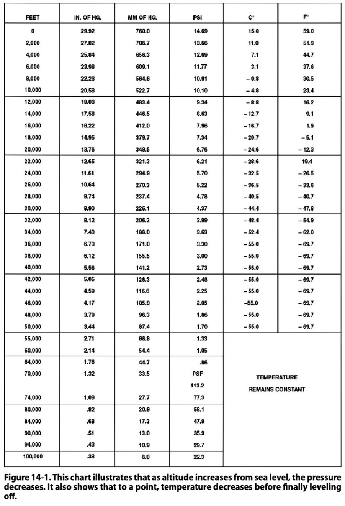
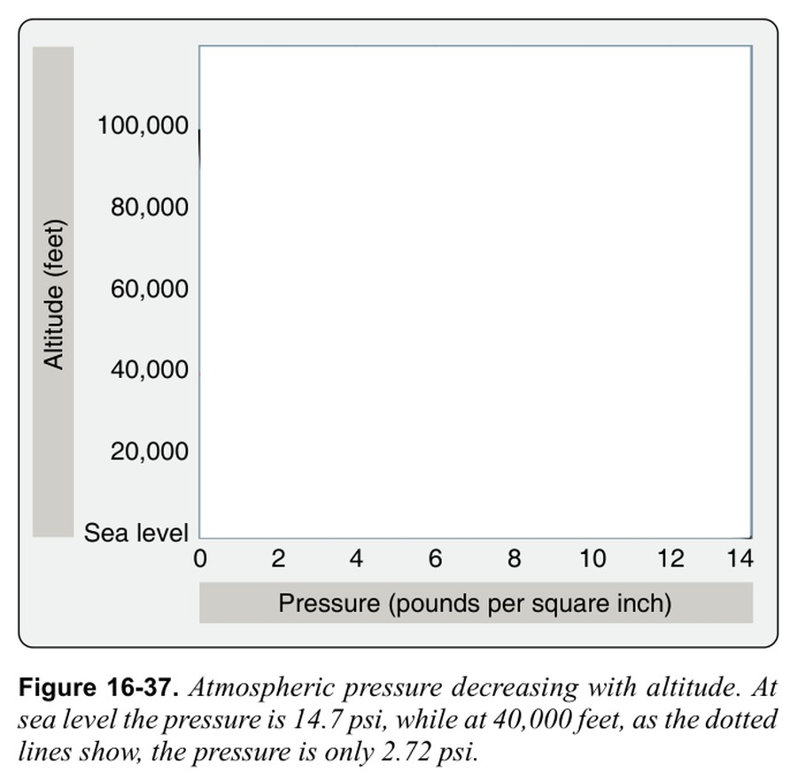
- A. 산소 78%·질소 21%Oxygen 78%, nitrogen 21%
- B. 질소 78%·산소 21%Nitrogen 78%, oxygen 21%
- C. 이산화탄소 50%·산소 50%CO2 50%, oxygen 50%
- D. 질소 90%·산소 10%Nitrogen 90%, oxygen 10%
- A. 시력Eyesight
- B. 판단력(Judgment)Judgment
- C. 청력Hearing
- D. 촉각Touch
- A. 색이 다름Different color
- B. 물을 거의 완전히 제거Water nearly fully removed
- C. 압력이 낮음Lower pressure
- D. 냄새 첨가Scent added
- A. 450psi·노랑450 psi, yellow
- B. 1,800~2,400psi·초록1,800-2,400 psi, green
- C. 3,000psi·빨강3,000 psi, red
- D. 70psi·파랑70 psi, blue
- A. 연속흐름(Continuous Flow)Continuous flow
- B. 디맨드(Demand)Demand
- C. 리브리더Rebreather
- D. 수동 조절Manual
- A. 세이프티 밸브Safety valve
- B. 아웃플로 밸브(Outflow Valve)Outflow valve
- C. 음압 릴리프Negative relief
- D. 체크 밸브Check valve
- A. 고압·저압High/low pressure
- B. 등압(Isobaric)·정차압(Constant Differential)Isobaric and constant differential
- C. 자동·수동만Auto/manual only
- D. 냉방·난방Cool/heat
- A. 전기 펌프Electric pump
- B. 객실 차압(Differential Pressure)Cabin differential pressure
- C. 수압Water pressure
- D. 중력만Gravity only
- A. 수동 펌프Hand pump
- B. 블리드 에어 또는 전용 압축기Bleed air or a dedicated compressor
- C. 중력Gravity
- D. 질소병Nitrogen bottle
- A. 1차 열교환기Primary heat exchanger
- B. 팽창 터빈Expansion turbine
- C. 워터 세퍼레이터Water separator
- A. 연료 연소용 공기를 공급한다Supplies air for fuel combustion
- B. 열을 필요한 곳으로 운반한다Carries heat to the places where needed
- C. 배기가스를 희석한다Dilutes the exhaust gases
- A. 램 에어ram air
- B. 배기 가스exhaust gas
- C. 블리드 에어bleed air
- A. 연소 공기 릴리프 밸브 또는 차압 조절기Either a combustion air relief valve or a differential pressure regulator
- B. 고정 오리피스A fixed orifice
- C. 체크 밸브A check valve
- A. 객실로 들어오는 공기량을 조절하여controlling the rate of air flowing into the cabin
- B. 객실에서 나가는 공기량을 조절하여controlling the rate at which air leaves the cabin
- C. 도어 씰을 팽창시키고 공기를 재순환하여inflating door seals and recirculating cabin air
- A. 객실 고도(Cabin altitude)Cabin altitude
- B. 블리드 공기 압력Bleed air pressure
- C. 압축기 출구 압력Compressor discharge pressure
- A. 압축공기원, 열교환기, 터빈a source of compressed air, heat exchangers, and a turbine
- B. 압축기, 콘덴서, 팽창밸브a compressor, condenser, and expansion valve
- C. 냉매, 증발기, 리시버 드라이어refrigerant, evaporator, and receiver-dryer
- A. 계통 막힘(Blockage)A blockage in the system
- B. 과충전An overcharge
- C. 정상 상태Normal condition
- A. 차단 밸브(Shut-off valve)Shut-off valve
- B. 안전 밸브(Safety valve)Safety valve
- C. 유출 밸브(Outflow valve)Outflow valve
- A. 주 착륙장치 작동 스위치(Squat switch)Main landing gear operated switch
- B. 객실 압력 조절기Cabin pressure regulator
- C. 부압 릴리프 밸브Negative pressure-relief valve
- A. 유출 밸브 개도(Outflow valve opening)Outflow valve opening
- B. 공압계통 압력Pneumatic system pressure
- C. 유입 밸브 개도Inflow valve opening
- A. 객실 강하율 조절기Cabin rate-of-descent control
- B. 부압 릴리프 밸브(Negative pressure relief valve)Negative pressure relief valve
- C. 양압 릴리프 밸브Positive pressure relief valve
- A. 유출 밸브가 더 천천히 닫히도록Outflow valve to close slower
- B. 유출 밸브가 더 빨리 닫히도록Outflow valve to close faster
- C. 객실 압축기 속도 감소Cabin compressor speed to decrease
- A. 객실 비행고도 압력과 평균 해면 압력의 차Difference between cabin flight altitude pressure and mean sea level pressure
- B. 외기(Ambient)압과 객실 내부 압력의 차Difference between the ambient and internal air pressure
- C. 컨트롤러 설정과 실제 객실 압력의 차Difference between controller setting and actual cabin pressure
- A. 뇌우 속 운항 허용To permit operation in thunderstorms
- B. 항공기 계통의 정상 작동To allow aircraft systems to operate properly
- C. 상층 대기의 적대적 환경에서 인간 비행을 가능하게 함To make human flight possible in the hostile environment of the upper atmosphere
- A. 모든 연결부의 누설 점검All connections checked for leaks
- B. 바이패스 밸브를 필터 위치로 리셋The fuel filter bypass valve reset
- C. 필터 하류 연료 샘플 채취A sample of fuel taken downstream
- A. 연료를 켜고 끄기를 반복함(사이클링, Cycling)Alternately turns the fuel on and off, a process known as cycling
- B. 연료량을 연속적으로 계량하여 BTU 출력 조절Meters fuel continuously to regulate BTU output
- C. 점화 트랜스포머 전압을 조절Regulates ignition transformer voltage
- A. 고온 공기 믹싱 밸브Hot air mixing valve
- B. 증기순환식 공조(Vapor cycle)Vapor cycle air conditioning
- C. 에어사이클 공조(Air cycle air conditioning)Air cycle air conditioning
- A. 냉각 유닛 압축기Refrigeration unit compressor
- B. 2차 열교환기Secondary heat exchanger
- C. 팽창 터빈(Expansion turbine)Expansion turbine
- A. 압축기를 거치며 열에너지 추출Extracting heat energy across a compressor
- B. 냉매가 든 냉각 코일 통과Passing air through cooling coils with refrigerant
- C. 팽창 터빈을 거치며 열에너지 추출Extracting heat energy across an expansion turbine
- A. 믹싱 밸브 고착(닫힘)The mixing valve sticking closed
- B. 증발기 내 수분Moisture in the evaporator
- C. 증발기를 통과하는 공기 흐름 부족Inadequate airflow through the evaporator
- A. 콘덴서(Condenser)Condenser
- B. 증발기Evaporator
- C. 팽창 밸브Expansion valve
- A. 콘덴서Condenser
- B. 증발기(Evaporator)Evaporator
- C. 팽창 밸브Expansion valve
- A. 압축기-콘덴서 사이 라인에서 프레온을 액화Liquefy freon between compressor and condenser
- B. 객실 공기의 온도를 낮춤Lower the temperature of the cabin air
- C. 프레온 기체의 열을 외기로 전달Transfer heat from freon gas to ambient air
- A. 작동시켜 압력 점검 수행Be operated and a pressure check performed
- B. 일정 시간 작동시켜 안정화 후 프레온 레벨 재확인Be operated for a period of time to reach a stable condition and then the freon level rechecked
- C. 프레온·오일 보충 전까지 작동 금지Not be operated until freon and oil have been added
- A. 프레온 기체의 열을 외기로 전달Transfer heat from the freon gas to ambient air
- B. 액체 프레온을 압축기 진입 전 기화Change liquid freon into a gas before the compressor
- C. 객실 공기의 열을 액체 프레온에 전달Transfer heat from cabin air to liquid freon
- A. 리시버-드라이어(Receiver-dryer)Receiver-dryer
- B. 증발기Evaporator
- C. 콘덴서Condenser
- A. 고압 액체High-pressure liquid
- B. 저압 액체Low-pressure liquid
- C. 고압 증기(High-pressure vapor)High-pressure vapor
- A. 고압 액체High-pressure liquid
- B. 저압 액체(Low-pressure liquid)Low-pressure liquid
- C. 고압 증기High-pressure vapor
- A. 액체를 직접 뽑아냄Drawing out the liquid
- B. 물의 끓는점을 높여 증기로 배출Raising the boiling point
- C. 물의 끓는점을 낮춰 증기로 배출Lowering the boiling point of the water and drawing out the vapor
- A. 저압 액체Low-pressure liquid
- B. 저압 증기(Low-pressure vapor)Low-pressure vapor
- C. 고압 증기High-pressure vapor
- A. 저압 액체Low-pressure liquid
- B. 고압 액체(High-pressure liquid)High-pressure liquid
- C. 고압 증기High-pressure vapor
- A. 수직, 출구 위쪽Vertical with the outlet at the top
- B. 수평, 출구 옆쪽Horizontal with the outlet to the side
- C. 수직, 출구 아래쪽Vertical with the outlet at the bottom
- A. 대기 오염 방지Prevent atmospheric contamination
- B. 냉동 오일(Refrigerant oil)의 과도한 손실 방지Prevent excessive loss of refrigerant oil
- C. 계통 내 응결 방지Prevent condensation
- A. 오일 스며나옴(Oil seepage)Oil seepage
- B. 사이트글라스 기포Bubbles in the sight glass
- C. 오존 냄새An ozone-like odor
- A. 계통 정상 작동The system is functioning normally
- B. 팽창 밸브가 프레온을 제대로 계량하지 못함The expansion valve is not metering freon properly
- C. 압축기 과다 펌핑The compressor is pumping too much refrigerant
- A. 피크 수요 시 냉방능력 증대Augment cooling capacity at peak demand
- B. 기내 급속 냉방 보조Aid in quick cooling
- C. 프레온을 냉각해 조기 기화(Flash-off) 방지Cool the freon to prevent premature vaporization
- A. 메탄가스로 변함Changes to methane gas
- B. 기본 화학 원소로 분해Is broken down into its basic elements
- C. 포스겐(Phosgene) 가스로 변함Changes to phosgene gas
- A. 수분 흡수 능력이 없는 저점도 엔진오일Low viscosity engine oil
- B. 특수 고급 냉동 오일(Refrigeration oil)Special high grade refrigeration oil
- C. 특수 수분 흡수 첨가제가 든 합성유Synthetic oil with water absorbing additives
- A. 연속 흐름식(Continuous-flow)Continuous-flow system
- B. 비상 흐름식Emergency-flow system
- C. 디맨드 흐름식(Demand-flow)Demand-flow system
- A. 수분(Moisture)Moisture
- B. 먼지Dust
- C. 질소Nitrogen
- A. 장탈 후 교환Removed and replaced
- B. 특수 산소계통 염료 침투제로 검사Inspected using a special oxygen system dye penetrant
- C. 이 목적으로 제조된 특수 비눗물 용액으로 기포 시험Bubble tested with a special soap solution manufactured specifically for this purpose
- A. 교정된 오리피스(Calibrated orifice)Calibrated orifice
- B. 압력 감압 밸브Pressure reducing valve
- C. 조종사 조절기Pilot's regulator
- A. 사용자가 대체 산소 선택 시When the user selects alternate oxygen
- B. 사용자가 100% 산소 선택 시When the user selects 100 percent oxygen
- C. 사용자가 흡입할 때When the user inhales
- A. 압력 릴리프 밸브(Pressure relief valves)Pressure relief valves
- B. 충전 차단 밸브Filler shutoff valves
- C. 압력 감압 밸브Pressure reducer valves
- A. 최소 99.5% 순도이며 사실상 수분이 없음Is at least 99.5 percent pure and is practically water free
- B. 최소 99.5% 순도이며 병원용과 동일Is the same as hospital-quality oxygen
- C. 병원용보다 수증기 함량이 높음Contains a higher level of water vapor
- A. 연속 흐름식과 압력-디맨드식Continuous-flow and pressure-demand types
- B. 압력-디맨드식만Pressure-demand type only
- C. 휴대용 병 방식만Portable-bottle type only
- A. 비상/딜류터 디맨드 위치에서 산소 흐름 대비 공기 흐름 조절Regulate airflow in relation to oxygen flow in emergency positions
- B. 딜류터 디맨드 위치에서 객실 고도에 따라 공기 흐름을 조절Regulate airflow in relation to cabin altitude when in diluter demand position
- C. 디맨드 밸브 파손 시 자동 비상 전환Automatically put the regulator in emergency position
- A. 산소(Oxygen)Oxygen
- B. 압축 공기Compressed air
- C. 질소Nitrogen
- A. 실린더와 내용물의 무게 측정Weigh the cylinder and its contents
- B. 실린더에 장착된 압력계 판독Read the pressure gauge mounted on the cylinder
- C. 마스크에서 압력 측정Measure the pressure at the mask
- A. 실리콘 유전체 컴파운드Silicone dielectric compound
- B. 글리세린Glycerine
- C. 테플론 테이프(Teflon tape)Teflon tape
- A. 녹색 열팽창 디스크의 소실The green thermal expansion disc missing
- B. 조종실 내 녹색 디스크 소실The green disc in the flight deck missing
- C. 산소 조절기의 녹색 디스크 소실The green disc on the regulator missing
- A. 압축 산소의 약 3배 저장능력, 400°F 이하에서 불활성인 발생기A volume storage capacity about three times that of compressed oxygen and system generators that are inert below 400°F, even under severe impact
- B. 조절 가능한 산소 방출률An adjustable oxygen release rate
- C. 400°F 이하 불활성 + 기체 산소와 유사한 분배계통Inert below 400°F with gaseous-type distribution
산소 부족으로 인한 두 가지 주요 위험입니다.Two major dangers from oxygen deficiency.
1) 저산소증(Hypoxia) — 인체가 필요한 산소를 공급받지 못하는 상태. 유효의식시간(Time of Useful Consciousness) — 스스로 대처 못 할 만큼 손상되기 전까지의 시간. 가장 위험한 점은 판단력을 가장 먼저 잃는다는 것(음주와 유사, 본인이 인지 못 함). 첫 징후는 약 10,000ft에서 호흡 증가·두통. 이어 어지럼·손끝 저림·시야 손상·졸림. 개인마다 매번 같은 방식으로 나타나므로 고도챔버 체험이 도움.1) Hypoxia — the body lacking needed oxygen; time of useful consciousness is how long before you're too impaired to help yourself; the worst part is losing judgment first (like intoxication, unrecognized); first signs at ~10,000 ft are increased breathing and headache, then dizziness, tingling fingers, vision impairment, sleepiness; it affects each person the same way each time, so chamber training helps.
2) 일산화탄소 중독(CO) — 연료의 불완전 연소 산물. 무색·무취·무미. 헤모글로빈이 산소보다 CO와 훨씬 강하게 결합해 산소 운반 능력 상실. 효과가 누적적(소량 장시간 = 다량 단시간). 소형기 배기식 히터의 균열·핀홀로 객실 유입(겨울철 창·벤트 닫을 때 위험).2) Carbon monoxide (CO) — a product of incomplete combustion; colorless, odorless, tasteless; hemoglobin binds CO far more strongly than oxygen, losing oxygen-carrying capacity; cumulative (small/long = large/short); enters via cracks/pinholes in exhaust-type heaters (dangerous in winter with vents closed).
CO 대처: 히터 차단, 모든 벤트 개방, 100% 산소 호흡. CO 검출기(색 변화: 밝은 노랑→진한 초록, 흰색→갈색/검정). 발견 시 배기계 전체 점검·수리 후 복귀.CO response: shut off the heater, open all vents, breathe 100% oxygen; CO detectors change color (light yellow to dark green, white to brown/black); on detection, inspect the entire exhaust system and repair before return.
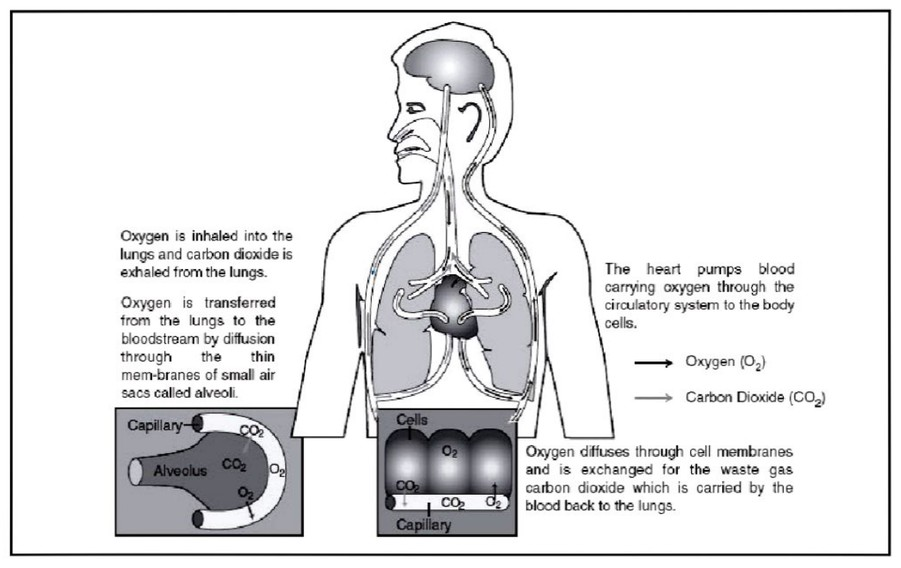
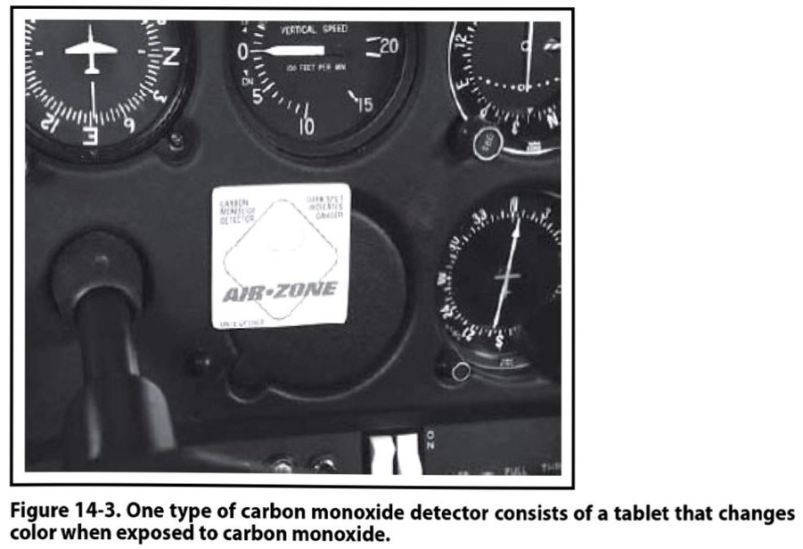
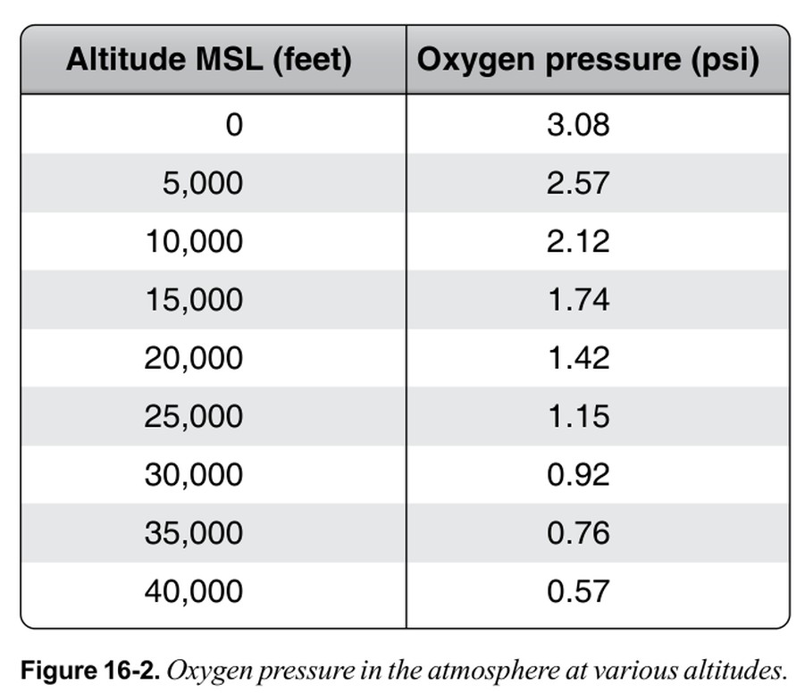
- A. 냄새로 감지 가능Detectable by smell
- B. 무색·무취·무미, 효과 누적적Colorless/odorless/tasteless, cumulative
- C. 산소보다 결합력 약함Binds weaker than oxygen
- D. 고고도에서만 발생Only at high altitude
고고도(일반적으로 10,000ft 이상)에서는 보충 산소가 필요합니다. 항공용 산소는 여러 방식으로 저장·생성됩니다.Above ~10,000 ft, supplemental oxygen is needed; aviation oxygen is stored/produced several ways.
1) 항공호흡용 산소(Aviator's Breathing Oxygen) — 상용 산소와 유사하나 물을 거의 완전히 제거(고고도 저온에서 밸브·오리피스 결빙 방지). 규격 MIL-O-27210(리터당 물 2mL 이하). 절대 다른 산소로 보급 금지.1) Aviator's breathing oxygen — like commercial but with water nearly fully removed (prevents valve/orifice icing at cold high altitude); spec MIL-O-27210 (<=2 mL water per liter); never service with other oxygen.
2) 기체 산소(Gaseous) — 강철 실린더에 1,800~2,400psi로 저장. GA에서 가장 흔함. 취급 용이하나 고압·무거운 실린더 단점. 초록색 도장, 'AVIATOR'S BREATHING OXYGEN' 흰 글자.2) Gaseous — steel cylinders at 1,800-2,400 psi; most common in GA; easy to handle but high-pressure and heavy; painted green with 'AVIATOR'S BREATHING OXYGEN' in white.
3) 액체 산소(LOX) — 담청색 액체, -181°F 이하 유지(듀어 플라스크, 이중벽 진공). 군용 주력(공간·무게 절약). 1L→기체 860L. 극저온 취급 위험, 미사용 시에도 벤팅 손실로 보충 필요.3) Liquid (LOX) — pale blue liquid kept below -181 F (Dewar flask, double-wall vacuum); military mainstay (space/weight savings); 1 L makes 860 L gas; cryogenic handling risk, needs replenishing from venting loss even when unused.
4) 화학(고체) 산소 — 염소산나트륨 캔들. 점화 시 대량 산소 방출. 점화 후 소화 불가(소진까지 연소). 무한 유효기간, 무보관조건. 여압 상실 시 비상용. 여객기 화물칸 운송 금지.4) Chemical (solid) — sodium chlorate candle; releases large oxygen on ignition; can't be extinguished once lit; unlimited shelf life, no special storage; emergency use on depressurization; banned as cargo on passenger aircraft.
5) 기계 분리 — 분자체(Molecular Sieve)로 공기에서 질소를 걸러 산소만 통과. 군용·의료용.5) Mechanical separation — a molecular sieve filters nitrogen from air, passing oxygen; military/medical.
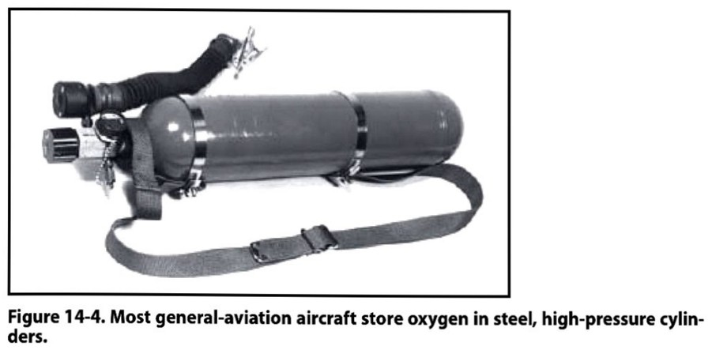
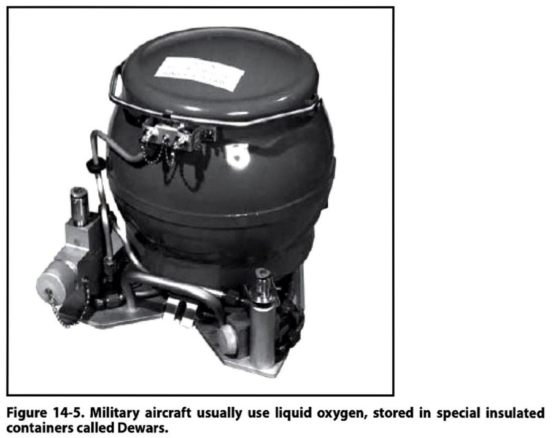
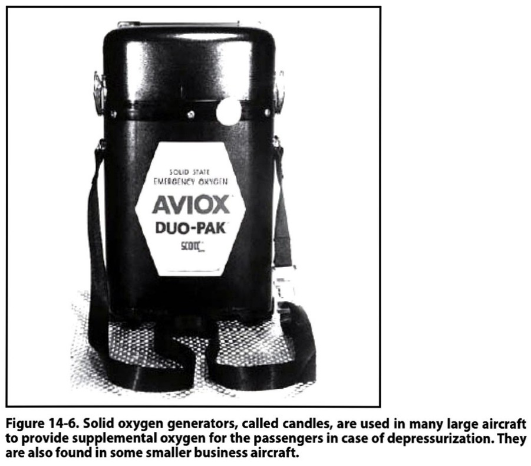
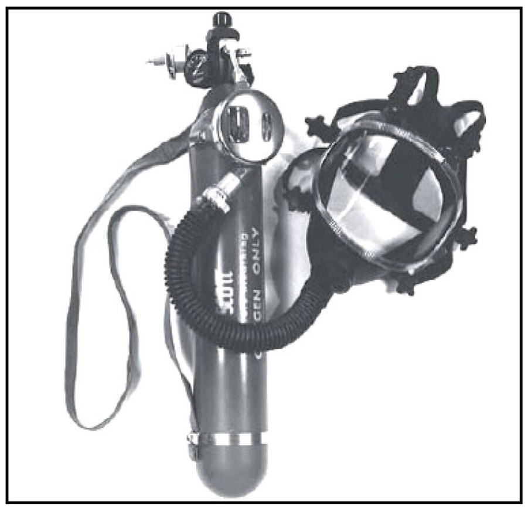
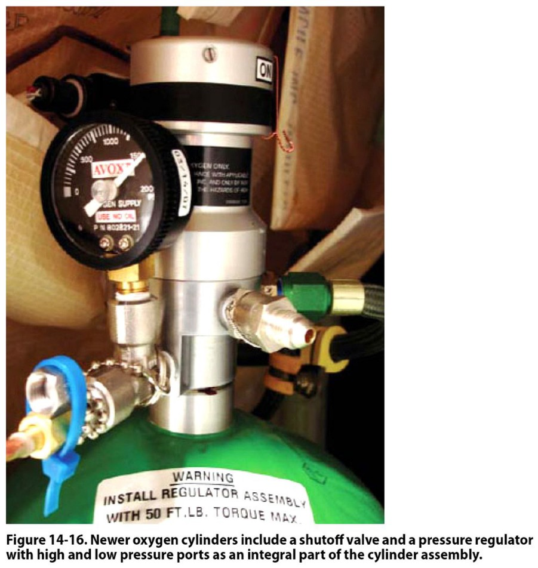
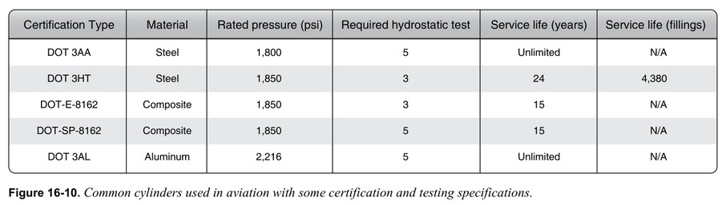
- A. 기체 산소Gaseous
- B. 액체 산소Liquid
- C. 화학(고체) 산소 캔들Chemical (solid) candle
- D. 기계 분리Mechanical separation
- A. 마노미터 압력시험Pressure test with manometer
- B. 질소 압력시험Pressure test with nitrogen
- C. 물을 이용한 압력시험(수압시험)Pressure test with water
- A. 5년마다Every 5 years
- B. 4년마다Every 4 years
- C. 3년마다Every 3 years
- A. 24년 또는 4,380회 충전 중 먼저 도래하는 시점24 years or 4,380 filling cycles
- B. 15년 또는 10,000회 충전15 years or 10,000 filling cycles
- C. 10년 또는 5,000회 충전10 years or 5,000 filling cycles
- A. 5년 또는 5,000회 충전 중 먼저5 years or 5,000 filling cycles
- B. 10년 또는 5,000회 충전 중 먼저10 years or 5,000 filling cycles
- C. 15년 또는 10,000회 충전 중 먼저15 years or 10,000 filling cycles whichever occurs first
- A. 압력 감압기 고장The pressure reducer to fail
- B. 자동 고도조절 밸브 개방The automatic altitude control valve to open
- C. 용기 내부에 수분 응집Moisture to collect in the bottle
- A. 다른 종류는 순도 99.5% 미만Other types are less than 99.5 percent pure
- B. 항공용은 수증기가 모두 제거됨Aviation breathing oxygen has had all the water vapor removed
- C. 항공용은 수증기 함량이 더 높음Aviation oxygen has a higher percentage of water vapor
- A. 녹색 + BREATHING OXYGEN 백색 1인치 글자Green color and BREATHING OXYGEN
- B. 노란색 + AVIATOR'S BREATHING OXYGEN 글자Yellow color and AVIATOR'S BREATHING OXYGEN
- C. 녹색 + AVIATOR'S BREATHING OXYGEN 백색 1인치 글자Green color and the words AVIATOR'S BREATHING OXYGEN stenciled in 1-inch white letters
- A. 시험 일자, DOT 번호, 일련번호가 목 부근에 각인With the test date, DOT number, and serial number stamped on the cylinder near the neck
- B. DOT 번호, 일련번호, 제조사 각인With the DOT number, serial number, and manufacturer
- C. DOT 번호와 제조사 각인With the DOT number and manufacturer
- A. 항공기 또는 실린더 제조사Aircraft or cylinder manufacturer
- B. 교통부(DOT, Department of Transportation)Department of Transportation
- C. NTSB 또는 압축가스 표준NTSB or Compressed Gas Standards
- A. 규정 주기 내에 수압시험을 받았을 것Hydrostatically tested within the proper time interval
- B. NTSB 승인을 받았을 것Approved by the NTSB
- C. 인증 기체 정비사의 검사를 받았을 것Inspected by a certificated airframe mechanic
레귤레이터는 실린더 고압을 호흡 가능한 저압으로 낮춥니다. 두 가지 기본형입니다.
1) 연속흐름(Continuous Flow) — 흡기·호기 관계없이 산소가 계속 흐름. 비효율적이나 단순·저렴. 소형 피스톤기, 여압 상실 시 승객에게 떨어지는 비상 마스크가 이 방식.
• 수동(Manual): 고도에 맞춰 손으로 유량 조절.
• 자동(Automatic): 기압 제어밸브가 고도에 맞춰 자동 조절.
2) 디맨드(Demand) — 흡기 시에만 산소 공급. 효율적. 승무원용.
• 희석 디맨드(Diluter Demand): 상용 제트기 승무원용. 저고도엔 객실 공기와 희석, 고도 상승 시 산소 비율↑, 약 34,000ft에서 순산소 공급. 연기 시 100% 레버로 순산소, 비상 레버로 양압 연속 공급.
• 압력 디맨드(Pressure Demand): 40,000ft 이상에서 순산소를 양압으로 폐에 강제 주입. 호흡법이 반대(내쉴 때 근육 힘 필요).
마스크: 연속흐름은 리브리더(Rebreather)형, 디맨드는 밀착형. 손상 시 수리 말고 교체.Regulators reduce cylinder high pressure to breathable low pressure; two basic types.
1) Continuous flow — oxygen flows regardless of inhaling/exhaling; inefficient but simple/cheap; small piston aircraft and the emergency masks dropping to passengers on depressurization.
Manual: adjust flow by hand for altitude; Automatic: a barometric valve adjusts for altitude.
2) Demand — oxygen only when inhaling; efficient; for crew.
Diluter demand: for jet crews; dilutes with cabin air at low altitude, raising oxygen ratio with altitude, pure oxygen at ~34,000 ft; a 100% lever gives pure oxygen for smoke, an emergency lever gives continuous positive pressure.
Pressure demand: above 40,000 ft, forces pure oxygen into the lungs under positive pressure; breathing is reversed (muscle effort to exhale).
Masks: continuous-flow uses rebreather type, demand uses close-fitting; replace rather than repair if damaged.
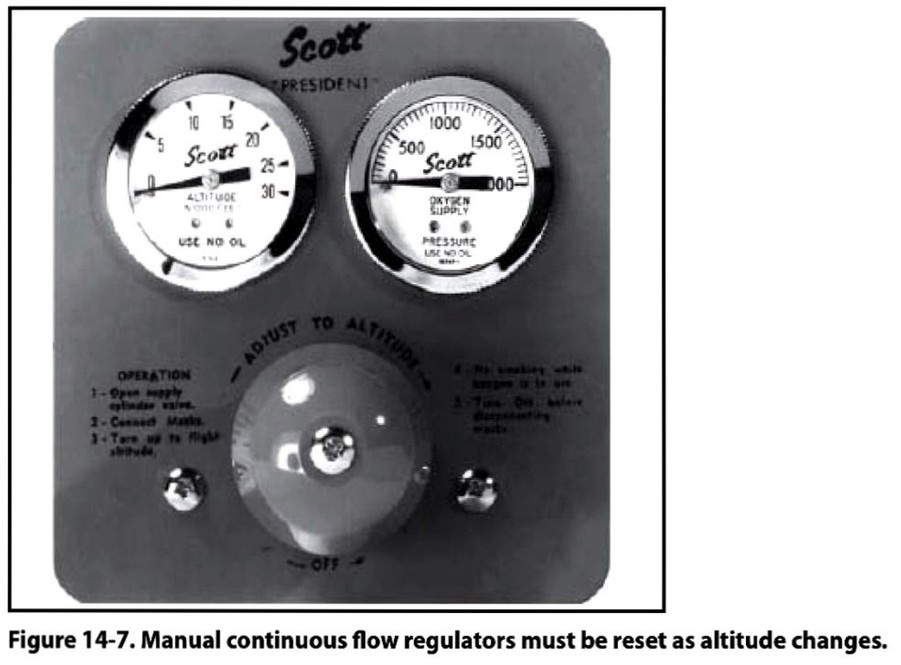
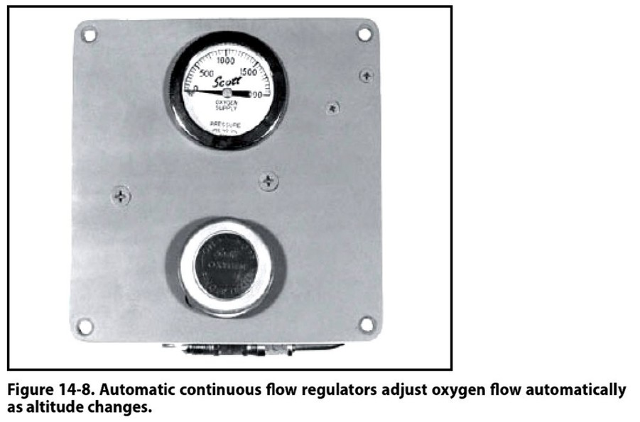
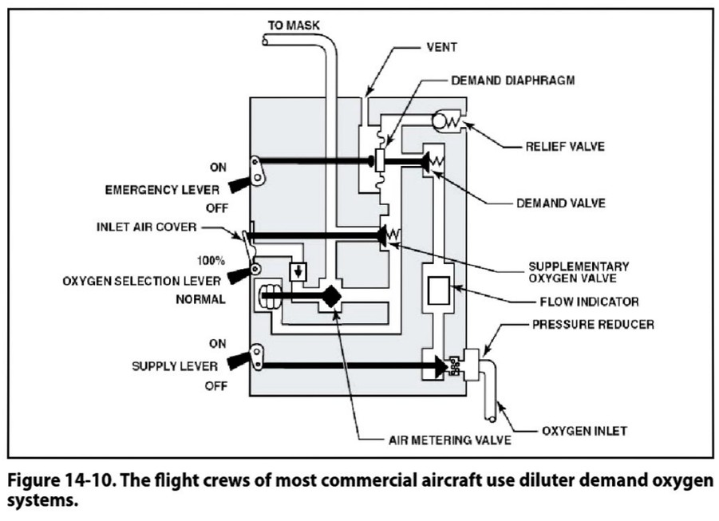
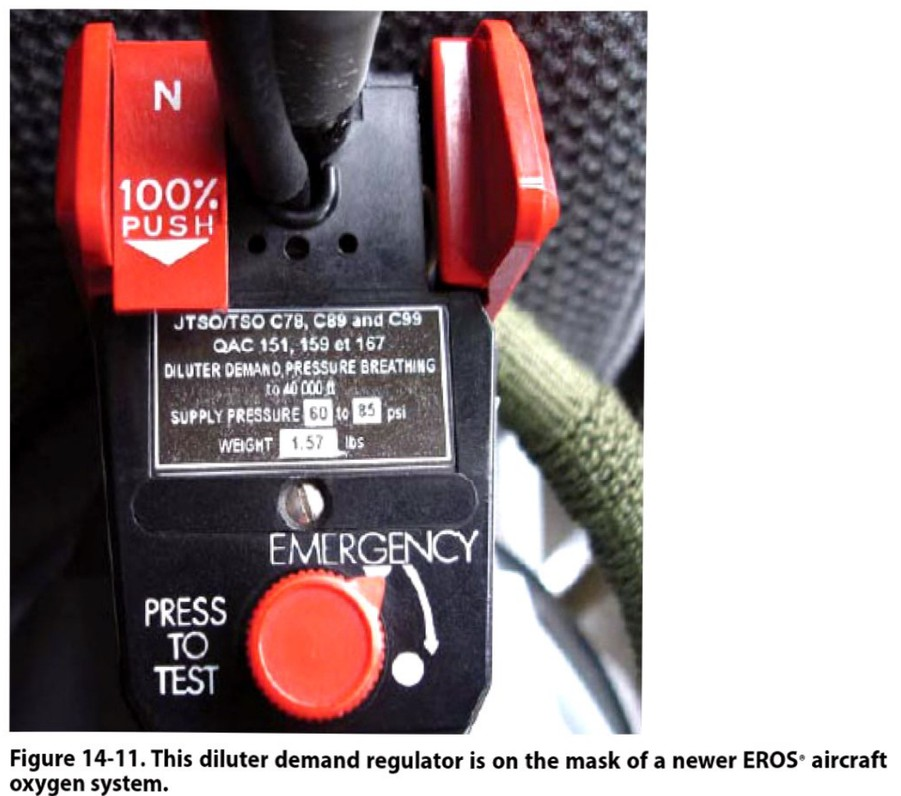
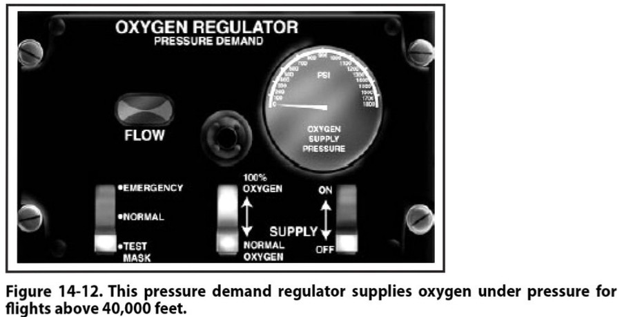
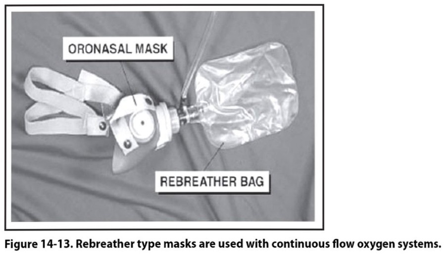
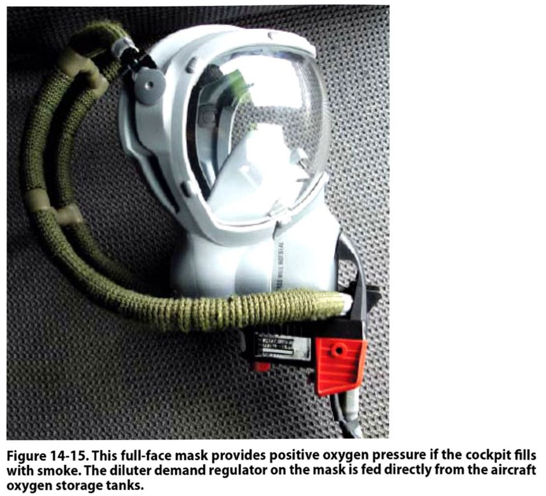
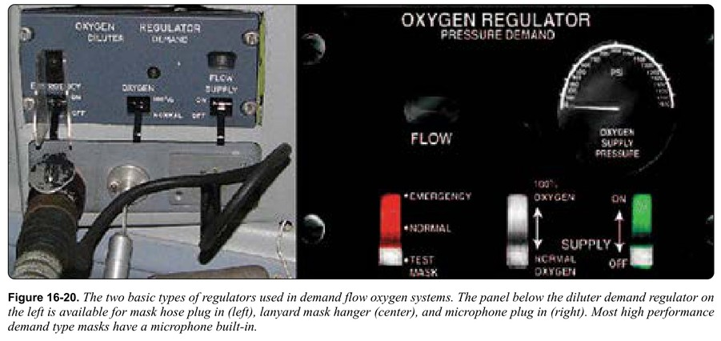
산소 계통 정비는 고압·강한 화학 활성 때문에 특별한 주의가 필요합니다.Oxygen servicing needs special care due to high pressure and strong chemical activity.
1) 안전 원칙 — 옥외 또는 환기 잘 되는 곳에서. 계통 내 작업 시 모든 전기 작업 중단. 산소는 석유제품(기름·그리스)과 접촉 시 격렬 반응·발화. 50ft 이내 흡연·화기 금지, 작업 후 10~15분 흡연 금지(의복에 산소 배임).1) Safety — work outdoors or well-ventilated; suspend all electrical work when servicing; oxygen reacts violently and ignites with petroleum (oil/grease); no smoking/flame within 50 ft, no smoking for 10-15 min after (oxygen permeates clothing).
2) 누설 검사 — 비유성 비누액으로 피팅에 발라 기포 확인. 플레어리스 피팅은 과소·과대 조임 모두 누설.2) Leak test — apply non-oily soap solution to fittings and watch for bubbles; flareless fittings leak from both under- and over-tightening.
3) 실린더 정수압 시험 — 작동압의 5/3로 시험. 3AA는 3,000psi로 5년마다, 3HT는 3,083psi로 3년마다(24년 또는 4,380회 충전 후 폐기).3) Hydrostatic test — to 5/3 of working pressure; 3AA at 3,000 psi every 5 years, 3HT at 3,083 psi every 3 years (retire after 24 years or 4,380 fills).
4) 충전 — 완전히 비우지 말 것(공기·수분 유입→결빙·부식). 50~100psi를 빈 것으로 간주. 최저압 실린더부터 사용. 온도별 충전 차트 사용(90°F에서 1,800psi 원하면 2,000psi까지 충전).4) Filling — never fully empty (air/moisture enters, causing icing/corrosion); 50-100 psi is considered empty; use the lowest-pressure cylinder first; use a temperature chart (fill to 2,000 psi for 1,800 psi at 90 F).
5) 배관 정비 — 석유계 나사 윤활제 절대 금지. 테프론 테이프 또는 MIL-G-27617 산소 호환 윤활제. 트리클로르에틸렌으로 세척·건조.5) Plumbing — never use petroleum thread lubricant; use Teflon tape or MIL-G-27617 oxygen-compatible lubricant; clean with trichloroethylene and dry.
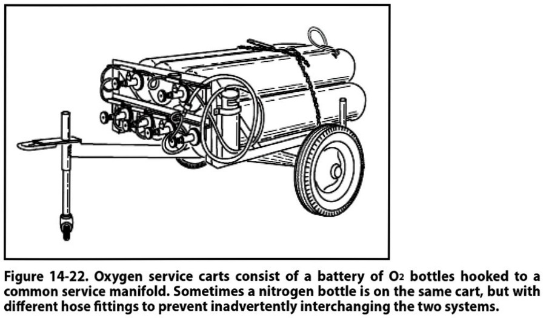
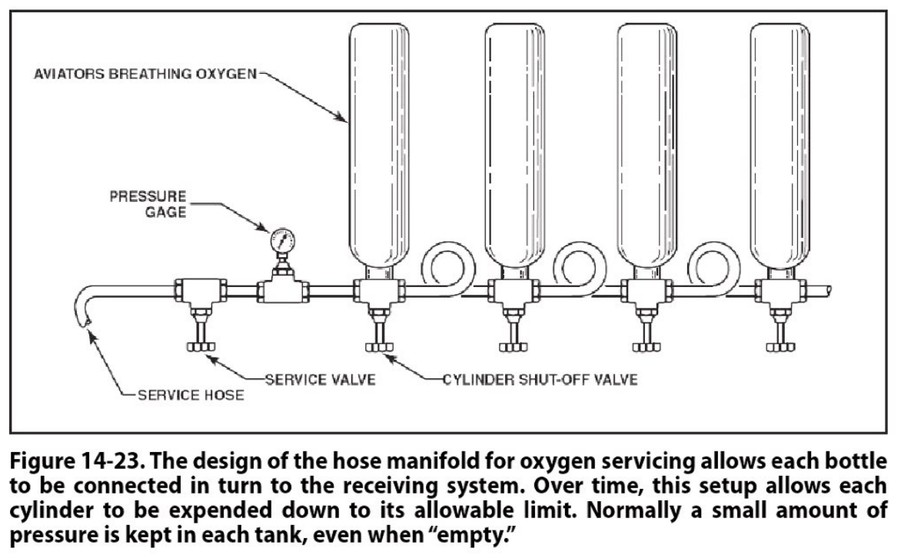
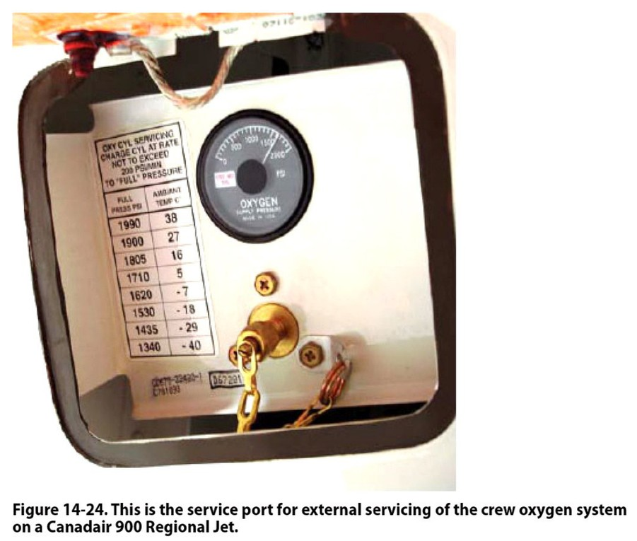
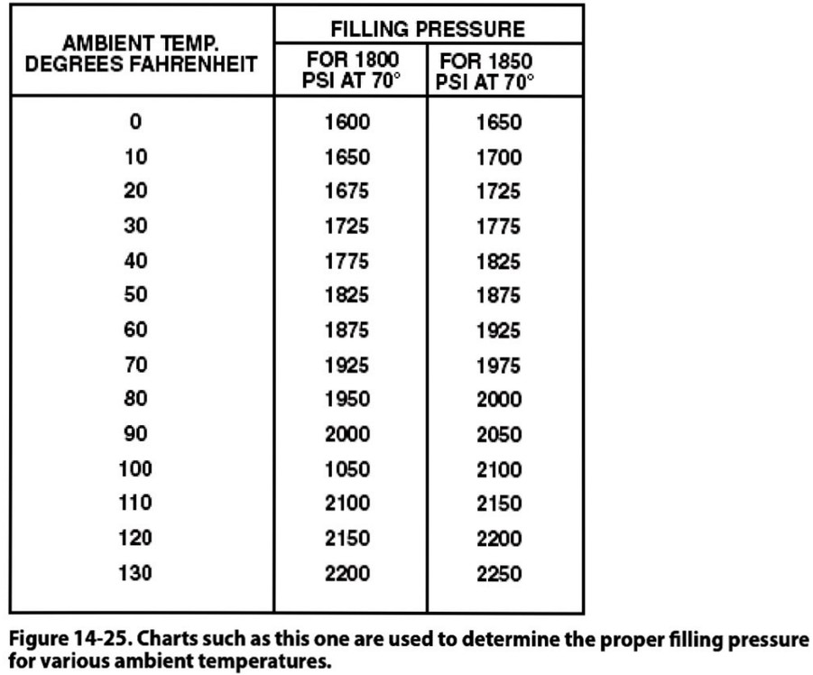
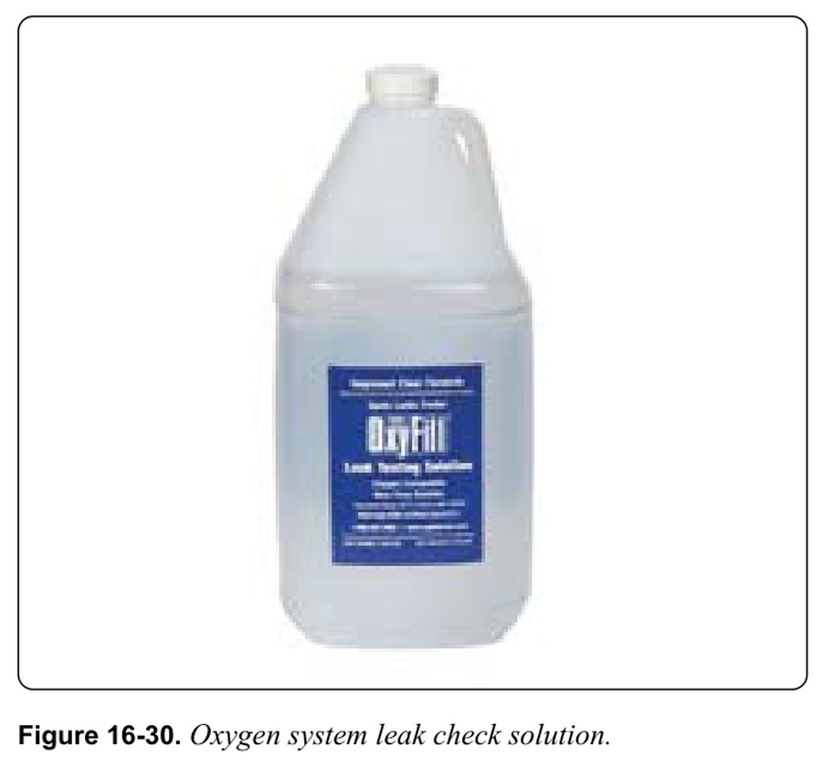
- A. 석유계 윤활제 사용Use petroleum lubricant
- B. 전기 작업 중단·석유제품 금지Suspend electrical work, no petroleum
- C. 완전히 비우기Fully empty
- D. 실내 밀폐 작업Work in sealed room
- A. 화학식 산소발생기 계통(Chemical oxygen generator)Chemical oxygen generator systems
- B. 고압 산소계통High-pressure oxygen systems
- C. 저압 산소계통Low-pressure oxygen systems
- A. 물리적 검사를 주기적인 일산화탄소 탐지 시험으로 보완Supplement physical inspections with periodic operational carbon monoxide detection tests
- B. 모든 배기 구성품을 주기적으로 장탈해 자분탐상 검사Remove all exhaust components for magnetic-particle inspection
- C. 매 100시간마다 배기 구성품 전량 교체Replace all exhaust components each 100-hour inspection
- A. 오일 점검·보충, 계통 배기(Evacuate), 진공 해제, 프레온 충전Check oil and add as necessary, evacuate the system, relieve vacuum, and add freon
- B. 오일 점검·보충, 계통 배기, 프레온 충전Check oil and add as necessary, evacuate the system, and add freon
- C. 오일 점검·보충 후 프레온 충전Check oil and add as necessary, and add freon
- A. 과충전 상태The system is over charged
- B. 정상 충전 상태Properly charged
- C. 충전 부족 상태The system is under charged
- A. 리시버-드라이어에서 얼어 계통 전체 정지In the receiver-dryer and stop the system
- B. 팽창 밸브에서 얼어 계통 전체 정지In the expansion valve and stop the entire system operation
- C. 계통은 계속 작동하도록 설계됨But the system continues operation
- A. 체크 밸브Check valve
- B. 압력 릴리프 밸브(Pressure relief valve)Pressure relief valve
- C. 매니폴드 컨트롤 밸브Manifold control valve
여압(Pressurization)은 고고도에서 마스크 없이 편안히 비행하도록 객실을 낮은 고도 환경으로 유지합니다.Pressurization keeps the cabin at a low-altitude environment for comfortable mask-free high-altitude flight.
1) 원리 — 필요 이상의 공기를 객실에 넣고 아웃플로 밸브(Outflow Valve)로 배출량을 조절해 압력 유지. 완전 기밀은 불가하므로 제어 누설(아웃플로·세이프티 밸브)이 압력을 결정.1) Principle — more air than needed enters the cabin, and an outflow valve regulates how much leaves to maintain pressure; airtight is impossible, so controlled leakage (outflow/safety valves) sets the pressure.
2) 두 모드 — 등압 모드(Isobaric): 상승해도 객실을 일정 고도로 유지(압력 조절기가 아웃플로 밸브 제어). 정차압 모드(Constant Differential): 차압이 구조 한계에 도달하면 전환, 내외 압력차를 일정하게 유지(고도 상승 시 객실 고도도 함께 상승).2) Two modes — isobaric: holds a constant cabin altitude while climbing (the regulator controls the outflow valve); constant differential: switches when differential hits the structural limit, holding a constant inside-outside difference (cabin altitude rises with flight altitude).
3) 여압 공기원 — 제트엔진 압축기 블리드 에어, 터보수퍼차저, 보조 압축기, 또는 에어사이클머신(ACM, 보잉 '팩'). 소형 피스톤기는 터보차저 블리드.3) Air sources — jet compressor bleed air, turbosupercharger, auxiliary compressor, or air cycle machine (ACM, Boeing 'packs'); small piston aircraft use turbocharger bleed.
4) 구조 한계 — 최대 허용 차압을 초과하면 안 됨. 초기 제트기는 반복 여압으로 금속 피로 사고 발생.4) Structural limit — never exceed maximum allowable differential; early jets had metal-fatigue accidents from repeated pressurization.
예: 40,000ft 순항 시 객실 고도 약 8,000ft 유지.Example: cruising at 40,000 ft keeps the cabin at about 8,000 ft.
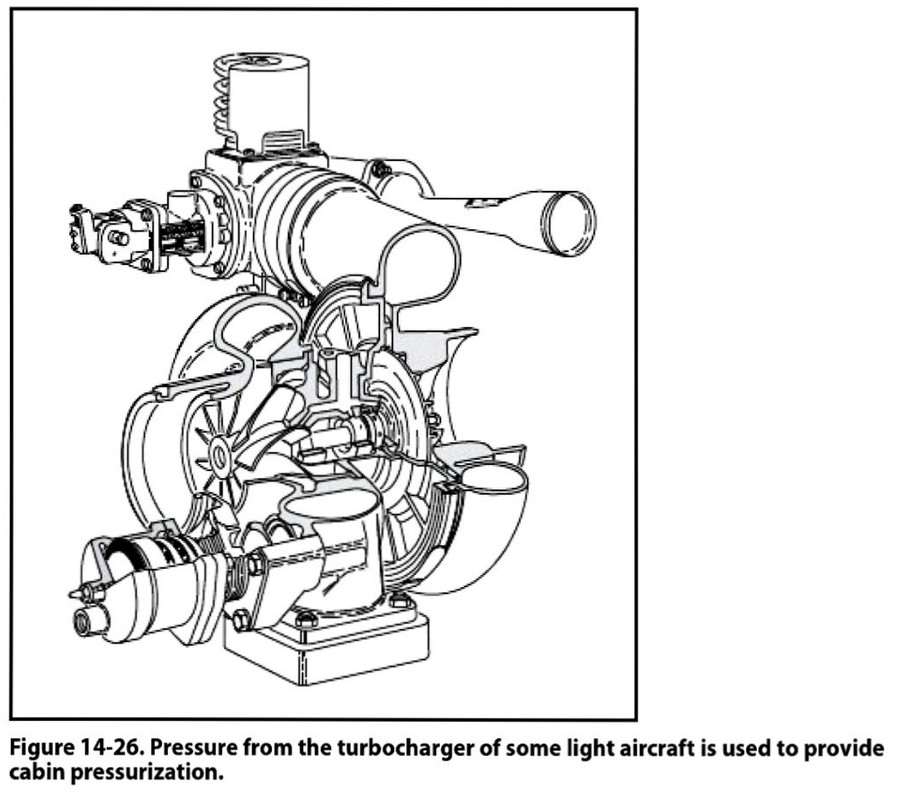
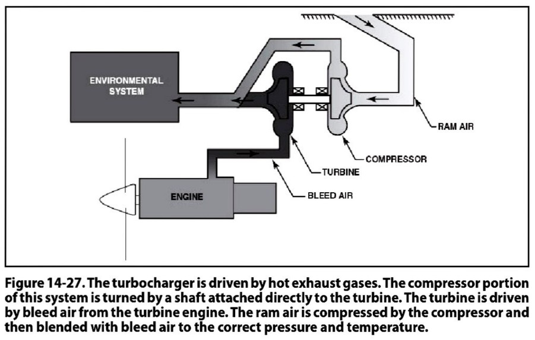
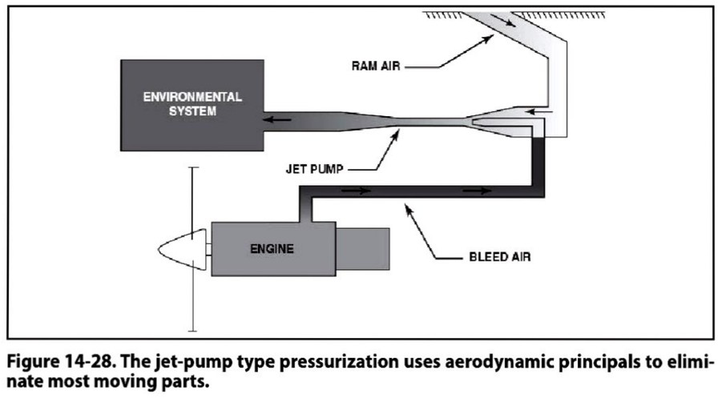
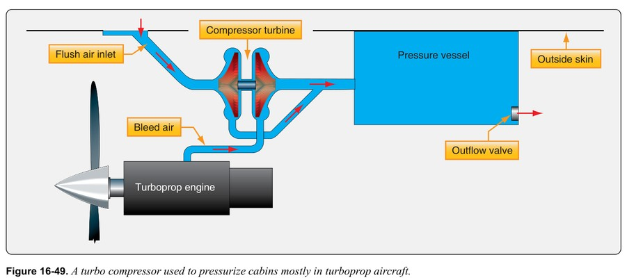
- A. 압축기(Compressor) 섹션Compressor section
- B. 터빈 섹션Turbine section
- C. 배기 섹션Exhaust section
- A. 압력감지 스위치가 여압 펌프를 on/offBy a pressure-sensitive switch controlling the pressurization pump
- B. 설정치 초과 압력을 배출하는 자동 유출 밸브By an automatic outflow valve that dumps all the pressure in excess of the amount for which it is set
- C. 여압 펌프 출력압을 조절하는 압력감지 밸브By a pressure-sensitive valve controlling pump output
- A. 방화벽 차단 밸브Firewall shutoff valve
- B. 객실 압력 유출 밸브Cabin pressure outflow valve
- C. 공급 덕트 체크밸브(Delivery air duct check valve)Delivery air duct check valve
- A. 유출 밸브 작동용 고압 생성Produce high pressure for the outflow valve
- B. 일부 구역의 공기 흐름 증대(Augmentation)Provide for augmentation of airflow in some areas of the aircraft
- C. 프레온 순환 보조Assist freon circulation
- A. 규칙적으로 반복되는 일련의 완전한 과정One complete series of events or operations that recur regularly
- B. 1회 이륙과 1회 착륙One take off and one landing
- C. 최대 차압 1회 도달Reaching maximum differential once
- A. 블리드 압력, 외기온도, 객실 상승률Bleed air pressure, OAT, and cabin rate of climb
- B. 기압(Barometric), 객실 고도, 객실 변화율Barometric pressure, cabin altitude, and cabin rate of change
- C. 객실 상승률, 블리드 유량, 객실 압력Cabin rate of climb, bleed air volume, and cabin pressure
객실 압력은 아웃플로 밸브의 개폐·조절로 제어됩니다. 공압식·전자식이 있습니다.Cabin pressure is controlled by opening/modulating the outflow valve; pneumatic or electronic.
1) 아웃플로 밸브(Outflow Valve) — 캐빈 압력 조절기가 제어. 닫힘/열림/조절(중간 위치) 가능. 조절기는 고도 선택기+상승률 제어기 포함.1) Outflow valve — controlled by the cabin pressure regulator; can close/open/modulate; the regulator has an altitude selector and rate controller.
2) 세이프티 밸브(Safety Valve) — 아웃플로 밸브 고장 대비 백업. 평소 닫힘(지상 제외). 과압 시 완전 개방으로 구조 파손 방지.2) Safety valve — backup for outflow valve failure; normally closed (except on ground); opens fully on overpressure to prevent structural failure.
3) 스쿼트 스위치 연동 — 지상에서 무게가 바퀴에 있으면 덤프 솔레노이드가 열려 여압 해제(이륙 시 닫힘).3) Squat switch link — with weight on wheels, a dump solenoid opens to release pressurization (closes at takeoff).
4) 음압 릴리프 밸브(Negative Pressure Relief) — 외부압>객실압일 때 개방(강하 시). 객실 고도가 항공기 고도보다 높아지는 것을 방지.4) Negative pressure relief — opens when outside pressure exceeds cabin (during descent), preventing cabin altitude exceeding aircraft altitude.
5) 콕핏 지시 — 캐빈 고도계, 캐빈 상승률계(정상 상승 500fpm·하강 300fpm), 차압계. 캐빈 고도 10,000ft 초과 시 경고혼.5) Cockpit indication — cabin altimeter, cabin rate-of-climb (normal 500 fpm up, 300 fpm down), differential gauge; a warning horn above 10,000 ft cabin altitude.
전자식은 AC 모터(자동)·DC 모터(수동)로 아웃플로 밸브 구동, 인터록으로 동시 작동 방지. 고장 시 제작사 매뉴얼로 고장탐구.Electronic systems drive the valve with AC motors (auto) and DC motors (manual), interlocked against simultaneous operation; troubleshoot faults per the manual.
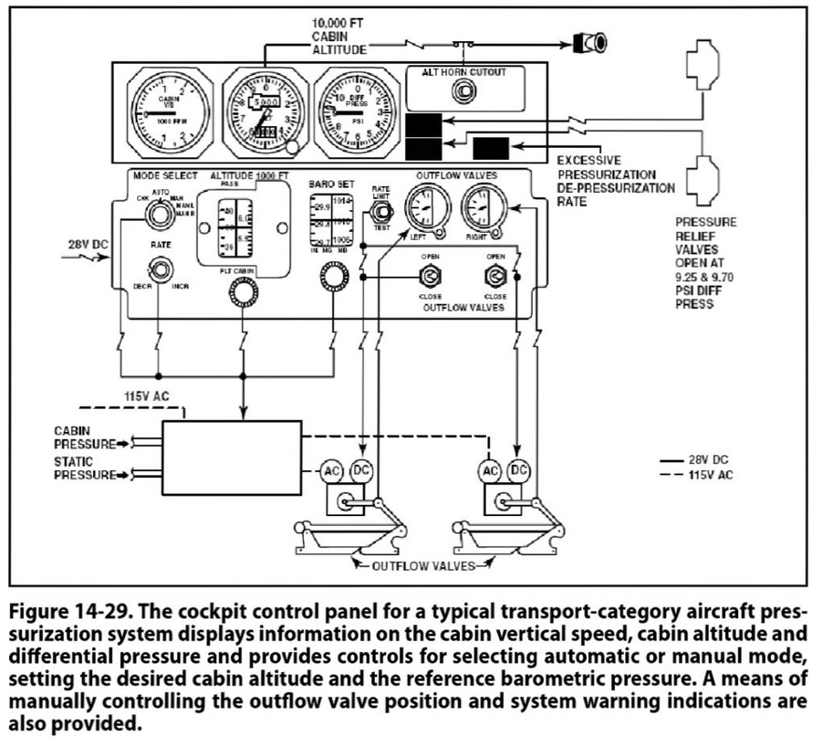
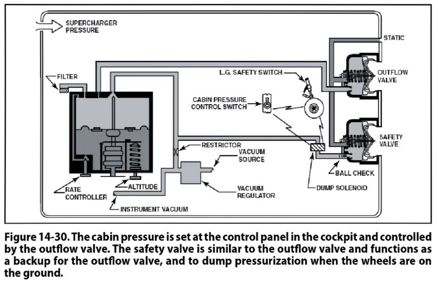
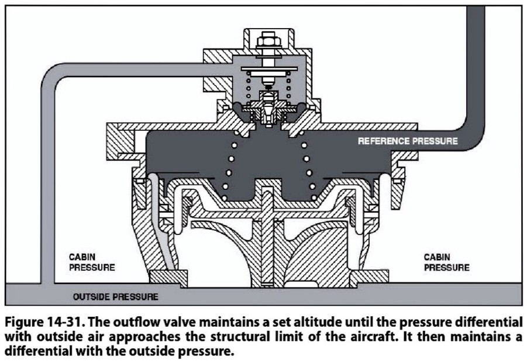
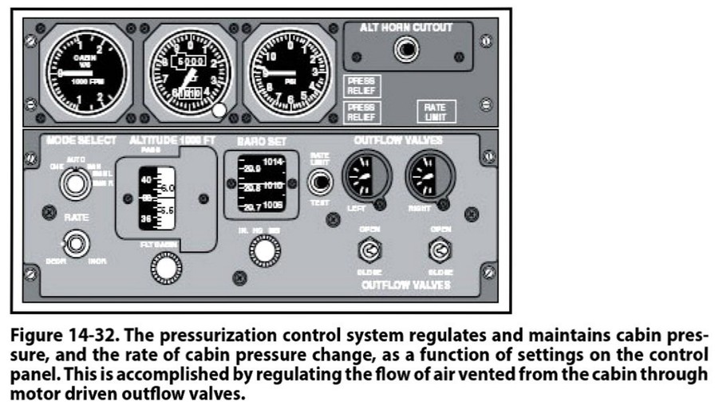
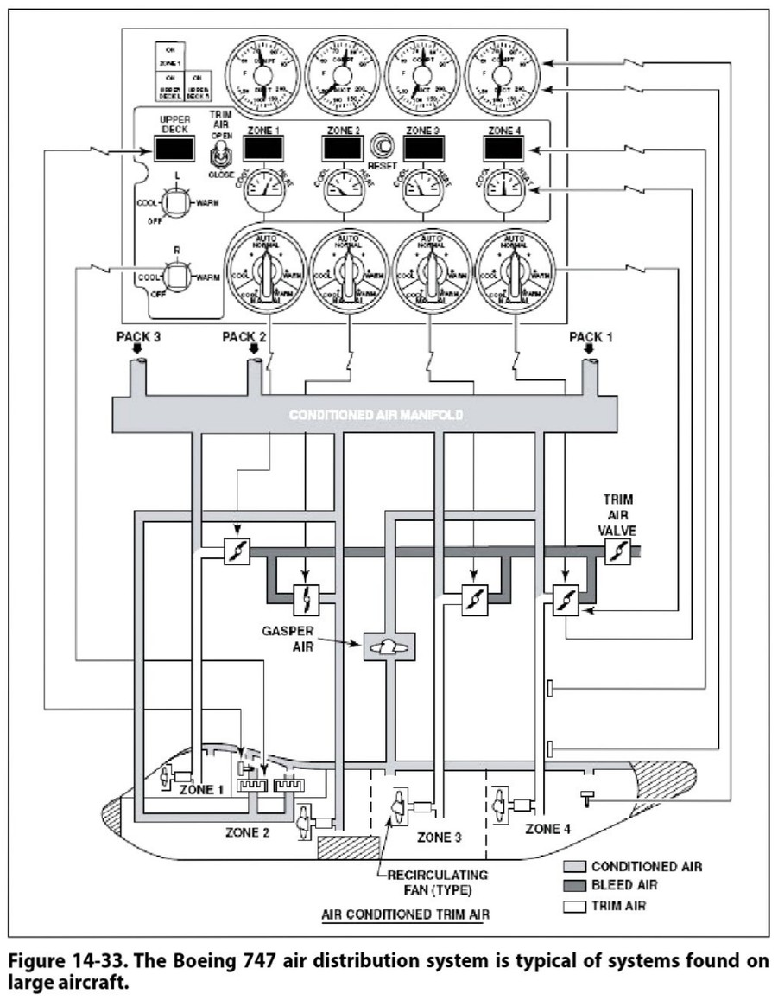
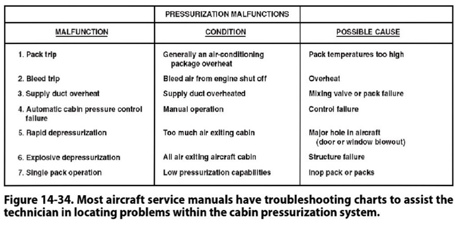
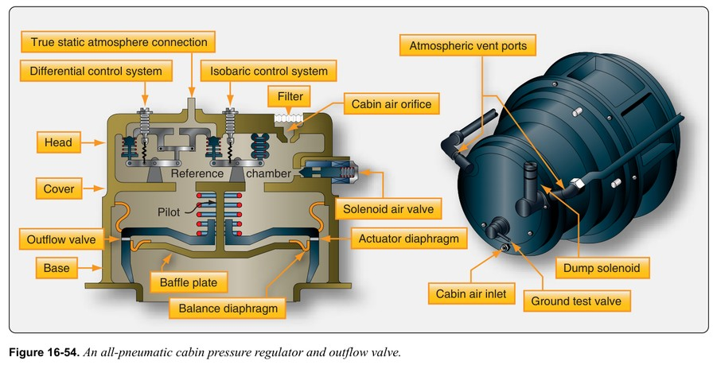
- A. 객실의 모든 양압(Positive pressure)all positive pressure from the cabin
- B. 객실의 부압(Negative pressure)negative pressure in the cabin
- C. 과도한 산소 압력excessive oxygen pressure
- A. 과여압 방지Provide protection against overpressurization
- B. 원하는 객실 압력 유지Maintain the desired cabin pressure
- C. 모든 고도에서 동일한 객실 압력 유지Maintain the same cabin air pressure at all altitudes
- A. 고온·냉각·저온 공기의 공급을 제어Control the supply of hot, cool, and cold air
- B. 조화 공기를 객실에 고르게 분배Distribute conditioned air evenly
- C. 램 에어와 조화 공기를 혼합Combine ram air with conditioned air
- A. 증발기로 들어가는 프레온Freon entering the evaporator
- B. 콘덴서 출구의 공기Air in the outlet of the condenser
- C. 증발기 출구의 프레온Freon in the outlet of the evaporator
- A. 기체 프레온의 압력 감소Reduce the pressure of the gaseous freon
- B. 액체 프레온의 압력 증가Increase the pressure of the liquid freon
- C. 액체 프레온의 압력 감소Reduce the pressure of the liquid freon
객실 냉방은 두 방식입니다: 에어사이클(Air Cycle) — 대형 터빈기의 표준, 블리드 에어 이용. 증기사이클(Vapor Cycle) — 냉매 이용, 소형기·터보프롭에 흔함.Cabin cooling uses two methods: air cycle — the standard on large turbine aircraft, using bleed air; and vapor cycle — using refrigerant, common on small aircraft and turboprops.
1) 에어사이클(ACM, '팩') — 블리드 에어 → 1차 열교환기 → ACM 압축기(압력·온도 상승) → 2차 열교환기(램 공기로 냉각) → 팽창 터빈에서 급팽창하며 크게 냉각 → 수분분리기 → 객실. 터빈이 뽑아낸 에너지가 압축기를 구동합니다. 뜨거운 트림 에어(Trim Air)를 섞어 구역별 온도 조절.1) Air cycle (ACM, the 'pack') — bleed air passes the primary heat exchanger, the ACM compressor (raising pressure/temperature), the secondary heat exchanger (ram-air cooled), then expands sharply across the expansion turbine, cooling greatly, through the water separator to the cabin; energy extracted by the turbine drives the compressor; hot trim air is mixed for zone temperature control.
2) 증기사이클 구성 — 압축기 → 응축기(고압측, 외기로 열 방출) → 리시버 드라이어 → 팽창밸브 → 증발기(저압측, 객실 공기의 열 흡수) → 압축기로 순환. 냉매는 R-12에서 R-134a로 대체.2) Vapor cycle layout — compressor, condenser (high side, rejecting heat to outside air), receiver-dryer, expansion valve, evaporator (low side, absorbing cabin heat), and back to the compressor; refrigerant R-12 has been replaced by R-134a.
3) 사이트 글라스 판독 — 기포(Bubbles)가 보이면 냉매 부족(Low Charge). 연속 기포 시 냉매를 보충합니다. 정비는 매니폴드 게이지 세트(고압·저압)로 수행.3) Sight glass reading — bubbles indicate a low refrigerant charge; continuous bubbles mean the system needs charging; service with a manifold gauge set (high/low side).
4) 증기사이클 안전 — 액체 냉매 피부 접촉 시 동상, 화염·고온 접촉 시 유독가스(포스겐) 생성. 환기된 곳에서 작업하고, 회수·재생 장비를 사용(대기 방출 금지).4) Vapor cycle safety — liquid refrigerant on skin causes frostbite, and contact with flame or hot surfaces produces toxic gas (phosgene); work ventilated and use recovery/recycle equipment (no venting to atmosphere).
5) 난방 — 배기 슈라우드 히터(경항공기, CO 누설 위험 — 본 챕터 일산화탄소 참조), 연소식 히터(독립 연료 연소, 과열 스위치 보호), 블리드 에어(터빈기), 전기식.5) Heating — exhaust shroud heaters (light aircraft, CO leak risk — see carbon monoxide in this chapter), combustion heaters (burn fuel independently, protected by overheat switches), bleed air (turbine aircraft), and electric.
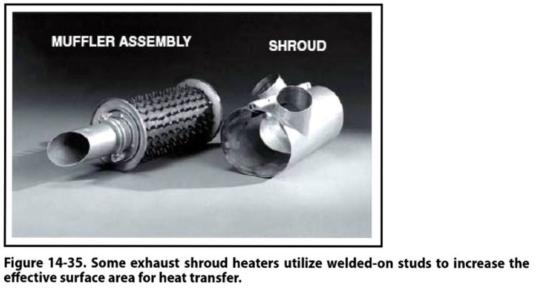
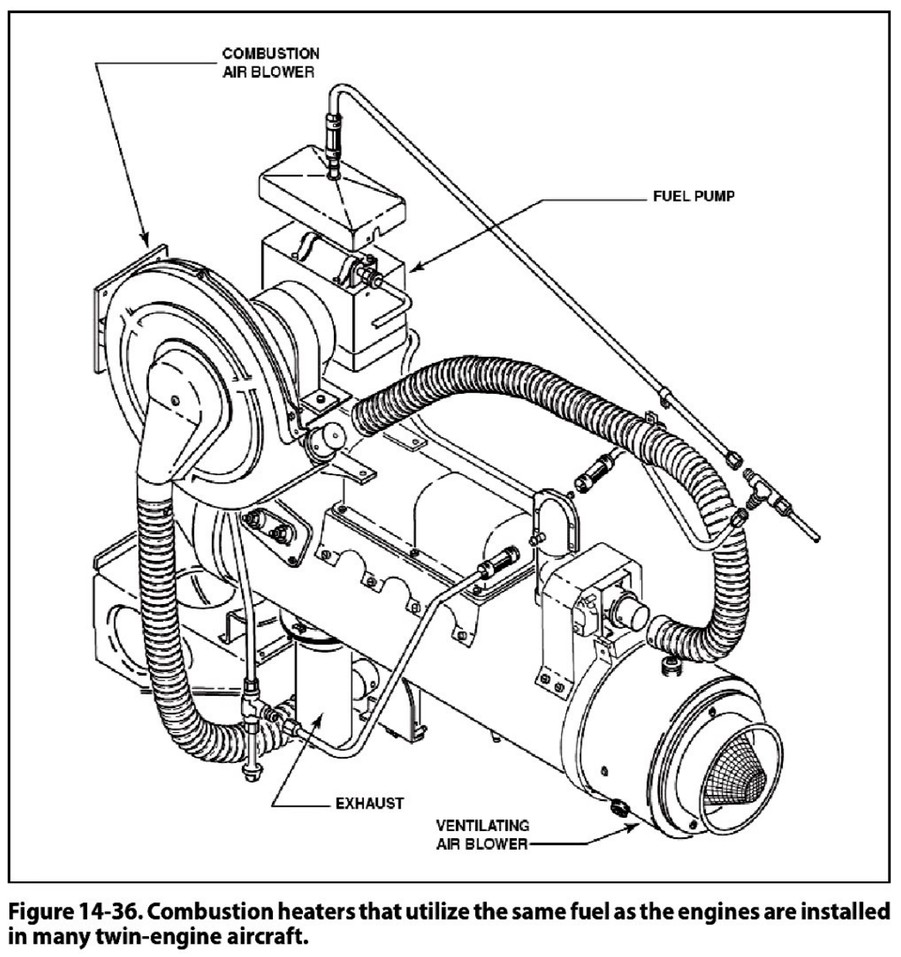
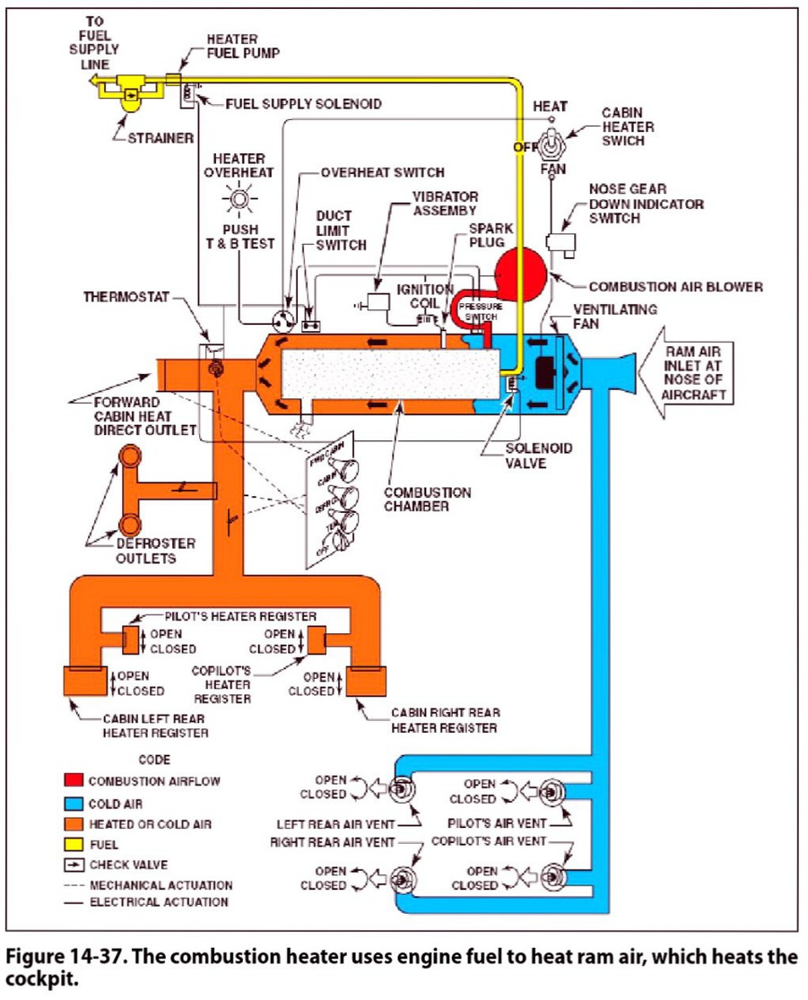
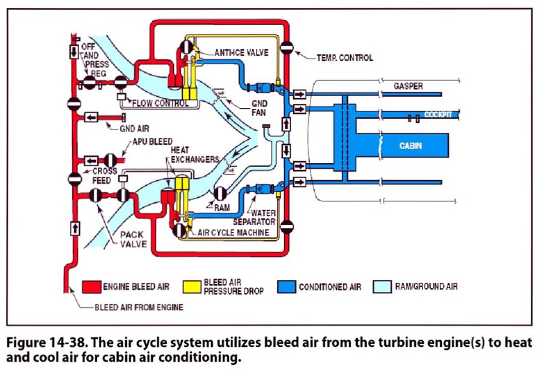
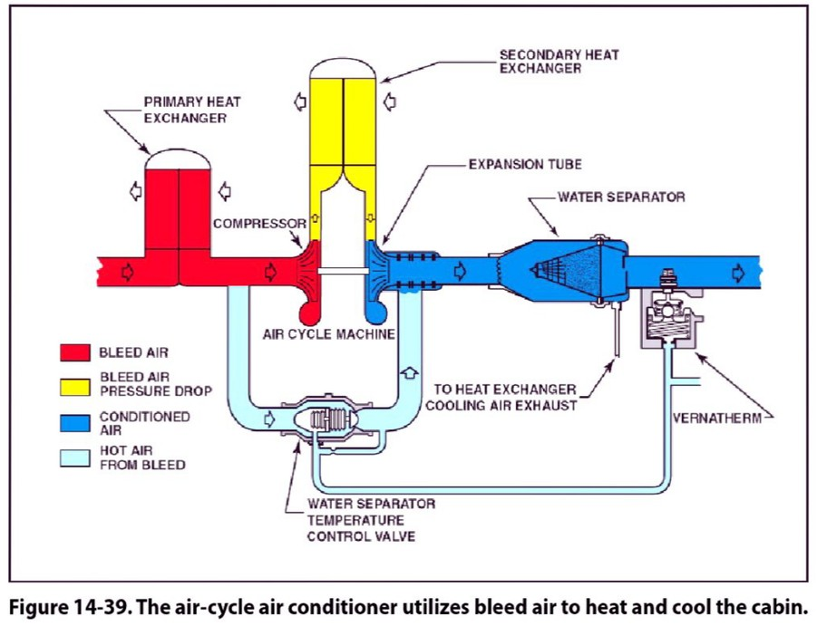
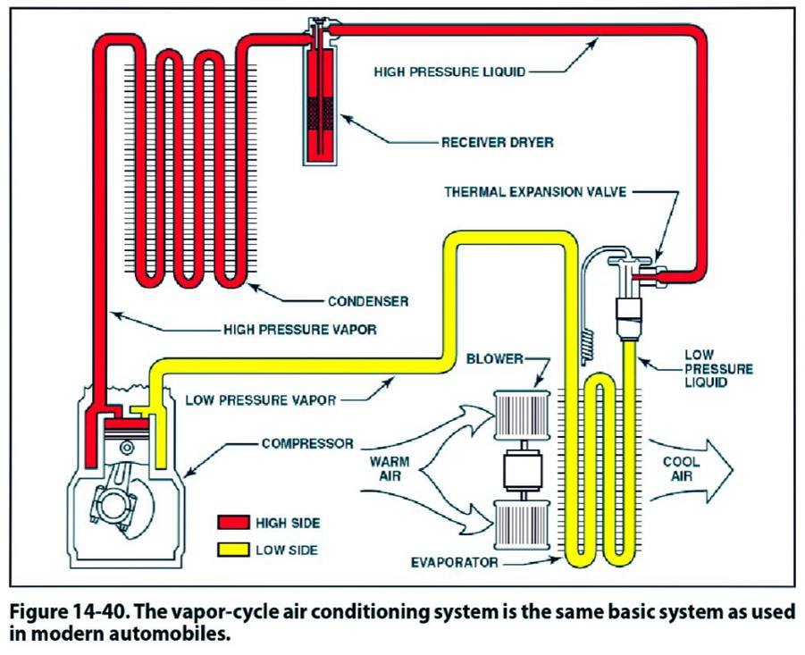
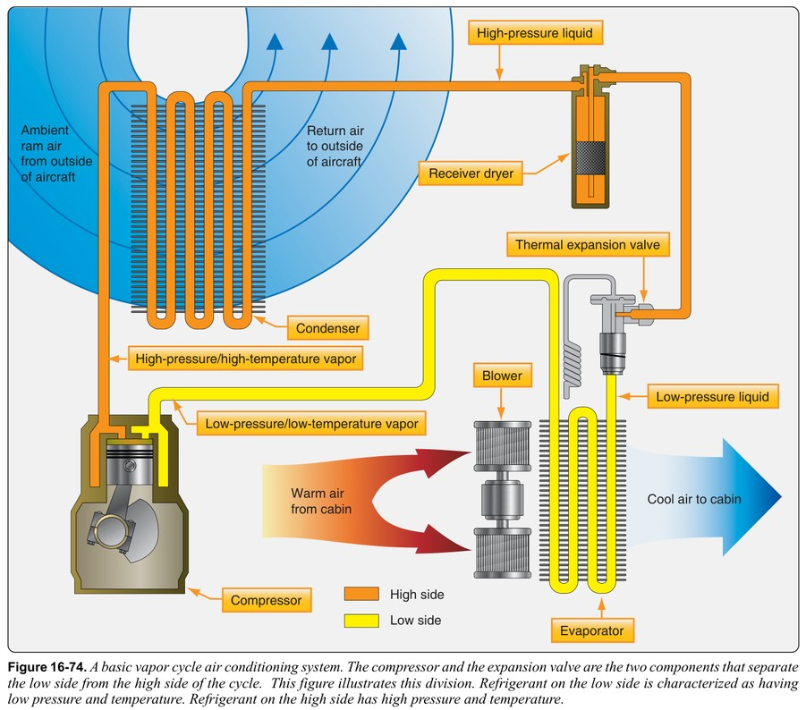
- A. 1차 열교환기Primary heat exchanger
- B. 압축기Compressor
- C. 팽창 터빈(급팽창)Expansion turbine (rapid expansion)
- D. 수분분리기Water separator
- A. 정상 작동Normal operation
- B. 냉매 부족(Low Charge) — 보충 필요Low refrigerant charge — needs charging
- C. 냉매 과충전Overcharge
- D. 압축기 과속Compressor overspeed
- A. 외기(램 에어)Ram air (outside air)
- B. 엔진 블리드 공기Engine bleed air
- C. 객실 재순환 공기Recirculated cabin air
- A. 증발기Evaporator
- B. 압축기Compressor
- C. 리시버 드라이어Receiver-dryer
- A. 사이트 글라스의 기포가 사라지면 적정Air bubbles in the sight glass disappear
- B. 저압 게이지가 0을 지시하면 적정The low-pressure gauge reads zero
- C. 증발기에 결빙이 생기면 적정Frost forms on the evaporator
- A. 콘덴서Condenser
- B. 팽창 밸브Expansion valve
- C. 압축기Compressor
물·폐수 계통(ACS Area O)은 2023 통합 ACS에 신설된 영역입니다. 대형기 객실 서비스의 기본입니다.Water and waste systems (ACS Area O) are a new area in the 2023 consolidated ACS and basic to large-aircraft cabin service.
1) 음용수(Potable Water) — 급수 탱크를 블리드 에어 또는 전용 압축기로 가압해 화장실·갤리로 공급. 수량 지시계 제공, 급수·배수는 외부 서비스 패널에서 수행.1) Potable water — the supply tank is pressurized by bleed air or a dedicated compressor to feed lavatories and galleys; quantity indication is provided, and filling/draining is done at an exterior service panel.
2) 동결 방지 — 급수·배수 라인과 드레인 마스트에 전기 히터(전기 방빙 참조). 한랭지 장기 주기 시에는 계통을 배수(Drain)합니다.2) Freeze protection — electric heaters on supply/drain lines and drain masts (see electric anti-ice); drain the system for long cold-weather parking.
3) 위생 — 정기 소독(염소 처리)과 탱크·라인 청결 유지. 음용수 서비스 장비는 폐수 장비와 엄격히 분리합니다.3) Sanitation — periodic disinfection (chlorination) and clean tanks/lines; potable-water service equipment is kept strictly separate from waste equipment.
4) 폐수(화장실) — 구형은 화학액을 재순환시키는 플러시식. 현대 대형기는 진공 화장실(Vacuum Toilet) — 고고도에서는 객실 차압이 폐수를 탱크로 흡인하고, 저고도·지상에서는 진공 블로워가 작동합니다. 폐수 탱크는 외부 서비스 패널에서 배출.4) Waste (toilets) — older types recirculate a chemical flush; modern transports use vacuum toilets — at altitude cabin differential pressure draws waste to the tank, while a vacuum blower runs at low altitude and on the ground; the waste tank is drained at an exterior service panel.
5) 누설 주의 — 외부로 새어나온 폐수가 얼어붙으면 '블루 아이스(Blue Ice)'가 되어 비행 중 낙하 위험이 있습니다. 서비스 패널·씰의 점검이 중요합니다.5) Leak caution — external leakage can freeze into 'blue ice' that may break off in flight; inspection of service panels and seals matters.
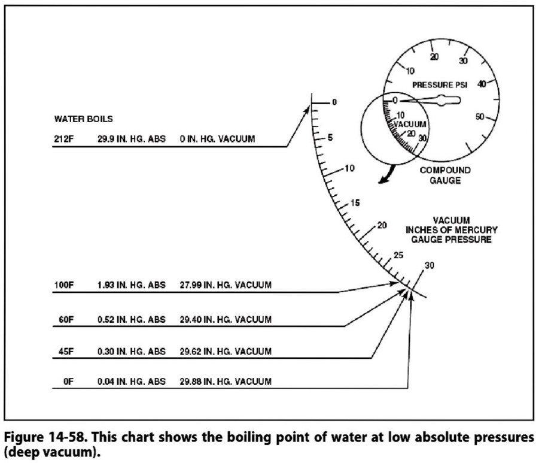
![Water and waste systems: potable supply and vacuum toilet]()
산소 계통 상세 (공급·실린더)
Supplemental Oxygen Detail📗 ASA AMT Vol.2 보강산소 공급 4가지 — ① 가스(gaseous): 고압강철실린더 1,800~2,400psi ② 액체(LOX): 듀어병, 팽창비 862:1, 군용 위주 ③ 화학 촛불(chemical candle): 염소산나트륨(NaClO₃) 연소로 발생, 점화 후 끌 수 없음, 저장성↑ ④ 기계식(OBOGS): 분자체(molecular sieve)가 블리드에어에서 산소만 통과.Four oxygen supplies: gaseous (1,800–2,400 psi steel cylinders), liquid (LOX Dewar, 862:1 expansion), chemical candle (NaClO₃, cannot be shut off once lit), and mechanical OBOGS (molecular sieve).
세 가지 계통 — 연속흐름(continuous-flow): 리브리더 마스크, 승객용·간헐사용. 희석요구(diluter-demand): 흡입 시에만 공급, 고도에 따라 기내공기 희석(약 34,000ft에서 100% 산소). 압력요구(pressure-demand): 40,000ft 이상, 양압으로 폐에 강제 주입.Three systems: continuous-flow (rebreather masks, passengers), diluter-demand (flows on inhale, dilutes with cabin air, 100% O₂ by ~34,000 ft), and pressure-demand (above 40,000 ft, positive pressure).
항공용 산소는 수분을 제거한 MIL-O-21749/27210 규격(순도 99.5% 이상, 수분 0.02mg/L 이하). 의료·용접용 산소는 수분 때문에 사용 금지(레귤레이터에서 결빙).Aviators' oxygen meets MIL specs (≥99.5% pure, ≤0.02 mg/L water); medical/welding oxygen is prohibited (moisture freezes in the regulator).
실린더 — DOT 3AA 1800(표준강철): 정수압시험 10년마다. DOT 3HT 1850(경량): 3년마다 시험, 24년/4,380회 후 폐기. 고압병=녹색(AVIATORS OXYGEN), 저압병(450psi)=황색. 압력이 50psi 이하로 떨어지지 않게(수분·부식 방지).Cylinders: DOT 3AA 1800 (steel) tested every 10 years; DOT 3HT 1850 (lightweight) every 3 years, retired at 24 years/4,380 fills. High-pressure bottles are green, low-pressure (450 psi) yellow. Never below 50 psi.
§91.211 보충산소 — 객실고도 12,500~14,000ft: 30분 초과 시 승무원 사용. 14,000ft 초과: 승무원 전 시간 사용. 15,000ft 초과: 전 탑승자 제공. 나사 윤활에 석유제품 금지(화재), 테플론 테이프·수성 윤활제 사용.§91.211: 12,500–14,000 ft crew uses O₂ if >30 min; above 14,000 ft crew the whole time; above 15,000 ft every occupant. No petroleum on fittings—use Teflon tape or water-base lubricant.
📄 원문: ASA AMT Vol.2 Airframe Systems, p.671–681Source: ASA AMT Vol.2, pp.671–681
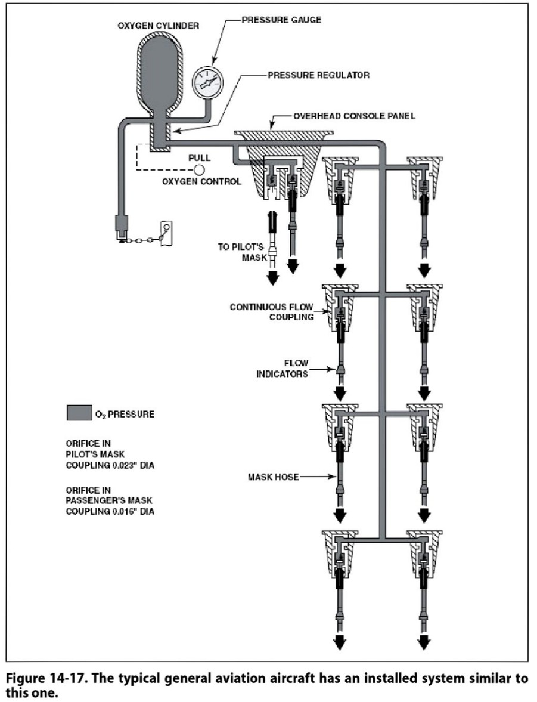
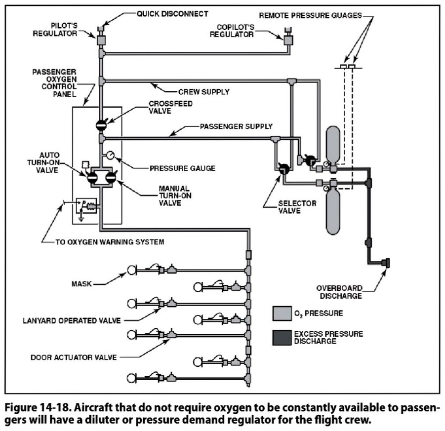
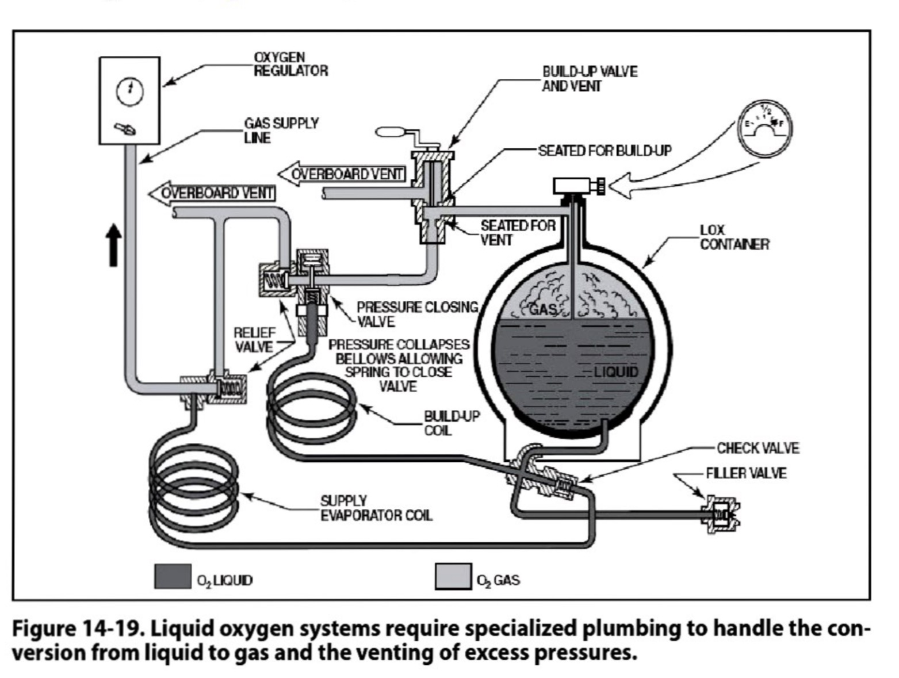
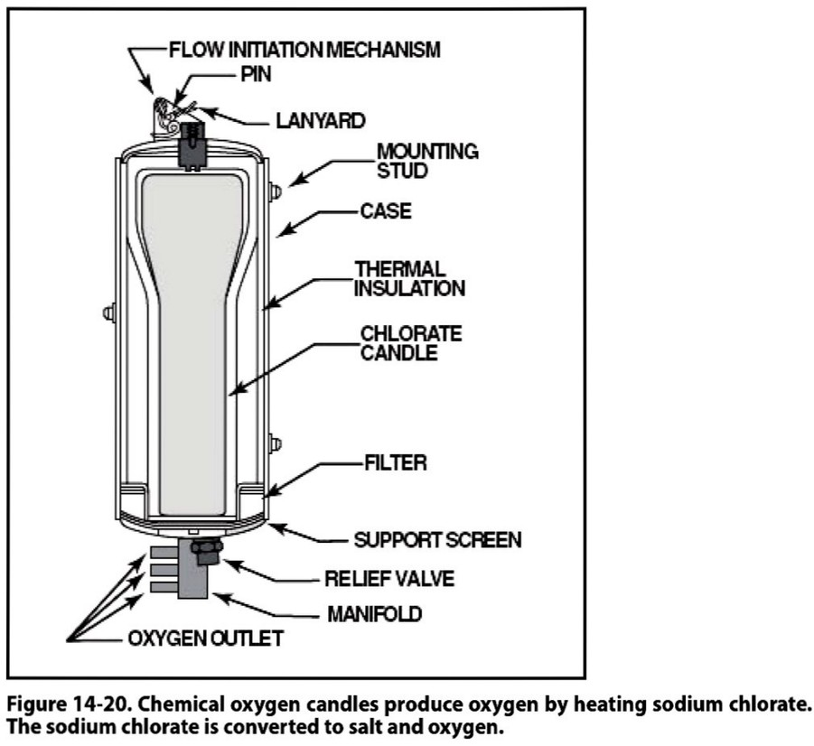
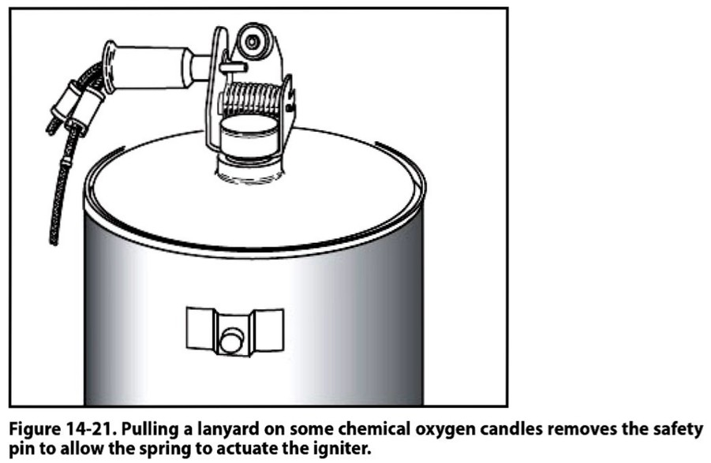
- A. 압력 감압 밸브(Pressure reducer valve)Pressure reducer valve
- B. 교정 고정 오리피스Calibrated fixed orifice
- C. 딜류터 디맨드 조절기Diluter demand regulator
여압 계통 상세 (모드·밸브)
Pressurization Detail📗 ASA AMT Vol.2 보강항공기는 강화된 압력용기(pressure vessel)를 밀폐하고 공기를 넣어 여압합니다. 후방의 아웃플로 밸브(outflow valve)가 유출량을 조절해 객실압을 제어. 여압공기원: 소형왕복기=터보차저, 대형왕복기=엔진구동압축기(루츠/원심), 터빈기=압축기 블리드 에어.Aircraft seal a pressure vessel and pump air in; a rear outflow valve controls cabin pressure. Air sources: turbocharger (small recips), engine-driven compressors (large recips), compressor bleed air (turbines).
3가지 여압 모드 — ① 무여압(unpressurized): 객실고도=비행고도(아웃플로 열림) ② 등압(isobaric): 비행고도 변해도 객실고도 일정 ③ 정차압(constant-differential): 최대차압 도달 시 객실압을 외기보다 일정량 높게 유지. 최대차압은 기체 구조강도가 결정.Three modes: unpressurized (cabin altitude = flight altitude), isobaric (constant cabin altitude), and constant-differential (cabin held a fixed amount above ambient, limited by structure).
부압 릴리프 밸브(negative-pressure relief) — 외기압이 객실압보다 높아지면 열려 구조 붕괴 방지(객실고도가 비행고도보다 높아지지 않게). 안전밸브(safety valve)는 압력릴리프+진공릴리프+덤프 겸용.A negative-pressure relief valve opens when ambient exceeds cabin pressure to prevent structural collapse. The safety valve combines pressure relief, vacuum relief, and dump.
덤프 밸브(dump valve) — 조종실 스위치로 작동, 객실공기를 배출. 스쿼트 스위치(squat switch)로 지상에서 열려 지상 여압을 방지. 신형기는 전자식(AC/DC 모터) 아웃플로 밸브를 AUTO/STANDBY/MANUAL로 제어.A dump valve (cockpit switch) vents cabin air; a squat switch opens it on the ground to prevent ground pressurization. Newer aircraft use electric outflow valves (AUTO/STANDBY/MANUAL).
📄 원문: ASA AMT Vol.2 Airframe Systems, p.684–692Source: ASA AMT Vol.2, pp.684–692
- A. 등압, 차압, 최대차압Isobaric, differential, and maximum differential
- B. 차압, 비여압, 등압Differential, unpressurized, and isobaric
- C. 외기압, 비여압, 등압Ambient, unpressurized, and isobaric
- A. 445 ~ 450 psi445 to 450 psi
- B. 446 ~ 450 psi446 to 450 psi
- C. 455 ~ 460 psi455 to 460 psi
- A. 445 ~ 450 psi445 to 450 psi
- B. 446 ~ 450 psi446 to 450 psi
- C. 455 ~ 460 psi455 to 460 psi
냉방 계통 상세 (ACM·증기사이클)
Cooling Systems Detail📗 ASA AMT Vol.2 보강공기사이클 냉방(ACM, air-cycle machine) — 뜨거운 블리드에어가 1차 열교환기에서 램공기로 냉각→ACM 원심압축기로 재압축→2차 열교환기→팽창터빈(expansion turbine)에서 팽창하며 급랭. 압축기를 터빈이 구동. 냉각된 공기의 수분은 수분리기(water separator)가 제거하며, 38°F 이하면 결빙 방지 위해 온수 혼합.Air-cycle cooling: hot bleed air is cooled in the primary heat exchanger, recompressed by the ACM compressor, cooled again in the secondary, then chilled by expansion in the turbine (which drives the compressor). A water separator removes moisture; below 38°F warm air is mixed to prevent freezing.
증기사이클 냉방(vapor-cycle) — R-134a(표준압에서 -14.9°F에 비등) 또는 구형 R-12 사용(비호환). 저압측(팽창밸브→증발기→압축기 입구)은 저온·저압, 고압측(압축기→응축기→리시버드라이어→팽창밸브)은 고온·고압.Vapor-cycle uses R-134a (boils at -14.9°F) or older R-12 (not interchangeable). The low side (expansion valve→evaporator→compressor inlet) is cold/low-pressure; the high side (compressor→condenser→receiver-dryer) is hot/high-pressure.
주요 구성품 — 압축기(compressor): 저압증기를 압축(온도·압력↑), 벨트+전자클러치 구동. 응축기(condenser): 열을 외기로 방출. 리시버드라이어: 액냉매 저장+건조제(desiccant)로 수분제거+사이트글라스. TEV(팽창밸브): 슈퍼히트(superheat)를 감지해 증발기로 냉매 계량. 증발기(evaporator): 객실열 흡수·제습, 배출공기 35~45°F.Key parts: compressor (raises temp/pressure, belt + electromagnetic clutch), condenser (rejects heat), receiver-dryer (stores liquid + desiccant + sight glass), TEV (meters refrigerant by superheat), evaporator (absorbs cabin heat, 35–45°F discharge).
정비 장비 — 매니폴드 게이지 세트: 적색=고압, 청색=저압(컴파운드 게이지), 황색=중앙 서비스. 슈레이더 밸브(Schrader valve)로 계통 접속. 딥배큠 펌프로 수분 제거, 전자식 오실레이터 리크 디텍터로 누설 탐지(냉매가 공기보다 무거워 프로브는 아래쪽).Servicing: manifold gage set (red=high, blue=low compound, yellow=service); Schrader valves; a deep-vacuum pump removes moisture; an electronic oscillator leak detector probe is held below (refrigerant is heavier than air).
📄 원문: ASA AMT Vol.2 Airframe Systems, p.697–714Source: ASA AMT Vol.2, pp.697–714
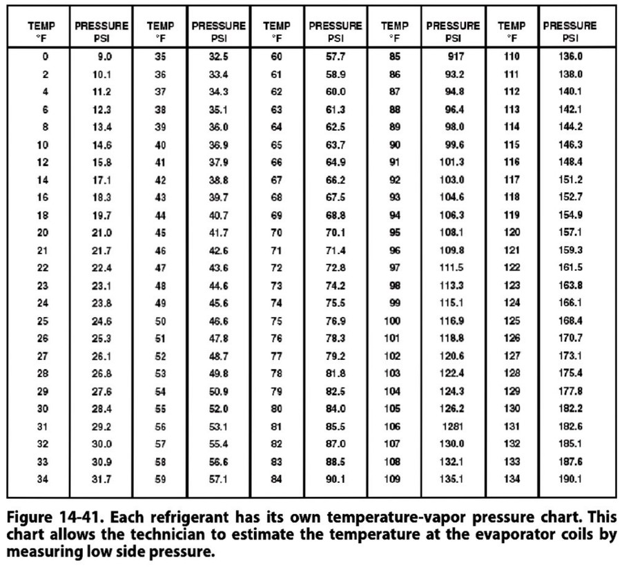
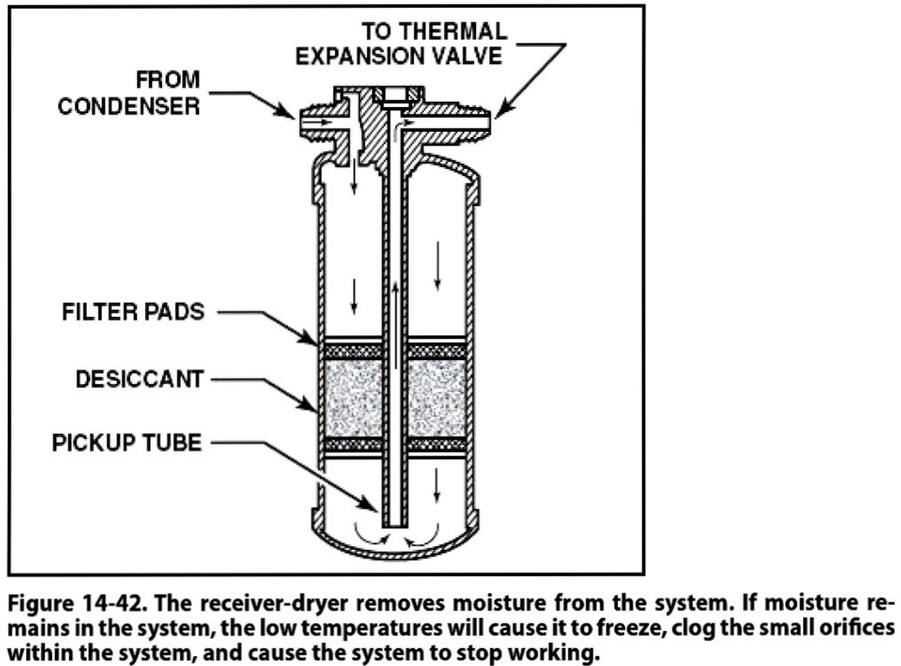
대기·표준대기와 호흡생리 📙 Jeppesen 참고
Atmosphere, Standard Day & Respiration대기는 질소 약 78%, 산소 약 21%에 수증기·이산화탄소·불활성기체로 이뤄진 혼합기체입니다. 공기는 질량이 있고 압축성이라 아래쪽이 더 조밀하며, 전체 질량의 절반 이상이 약 18,000 ft 아래에 있습니다. 표준 해면 조건은 압력 29.92 inHg(14.69 psi), 온도 15°C(59°F)이고, 고도가 오르면 압력·온도가 낮아지다가 약 36,000 ft 위에서 −55°C로 안정됩니다.The atmosphere is a mixture of ~78% nitrogen and ~21% oxygen plus water vapor, carbon dioxide, and inert gases. Air has mass and is compressible, so it's denser below, with over half its mass below ~18,000 ft. Standard sea-level conditions are 29.92 inHg (14.69 psi) and 15°C (59°F); pressure and temperature drop with altitude, stabilizing near −55°C above ~36,000 ft.
호흡 시 폐의 수백만 폐포(alveoli)에서 산소가 얇은 막을 통해 혈액으로 확산되고, 심장이 이 혈액을 세포로 보내며 노폐물인 이산화탄소를 폐로 되가져와 배출합니다. 중요한 것은 산소의 '분압(partial pressure)' — 공기 압력의 약 21%가 산소가 만드는 분압인데, 이 분압이 폐포막을 통해 산소를 혈액으로 밀어 넣습니다. 고고도에선 전체 압력이 낮아 산소 분압이 부족해집니다.In breathing, oxygen diffuses through the thin walls of millions of alveoli into the blood; the heart pumps it to the cells and returns waste carbon dioxide to the lungs for exhalation. Key is oxygen's partial pressure — about 21% of air pressure — which pushes oxygen through the alveolar walls into the blood. At high altitude, low total pressure means too little oxygen partial pressure.
저산소증(Hypoxia) 📙 Jeppesen 참고
Hypoxia몸이 필요한 산소를 못 받으면 저산소증이 생깁니다. 가장 큰 위험은 은밀함 — 뇌가 산소 부족이면 가장 먼저 '판단력'을 잃는데, 술 취한 것과 비슷해 스스로 인지하지 못합니다. '유효의식시간(time of useful consciousness)'은 스스로 조치할 수 있는 시간을 뜻합니다. 다행히 개인마다 증상이 매번 같아, 고도챔버에서 미리 경험하면 이후 인지가 쉬워집니다.When the body lacks needed oxygen, hypoxia develops. Its worst danger is subtlety — an oxygen-starved brain first loses judgment, much like intoxication, so the person can't recognize the impairment. 'Time of useful consciousness' is how long you have to act before you can't help yourself. Fortunately symptoms are consistent per person, so experiencing them in an altitude chamber aids later recognition.
초기 징후는 약 10,000 ft에서 호흡수 증가와 두통으로 나타납니다. 그 밖에 어지럼·손끝 저림·시야 저하·졸음이 있으며, 협응과 판단이 흐려집니다. 조기 인지가 어려워, 여압기에는 여압 상실을 알리는 경보장치를 흔히 둡니다. 통상 10,000 ft 이상 비행엔 보조산소가 권장됩니다.Early signs appear around 10,000 ft as an increased breathing rate and headache, plus light-headedness, tingling fingers, impaired vision, and sleepiness, with degraded coordination and judgment. Because early hypoxia is hard to detect, pressurized aircraft often have alarms for loss of pressurization. Supplemental oxygen is generally recommended above 10,000 ft.
일산화탄소(CO) 중독 📙 Jeppesen 참고
Carbon Monoxide Poisoning일산화탄소는 탄소 연료의 불완전연소 산물로 배기가스에 섞여 있습니다. 무색·무취·무미지만 배기가스가 감지되면 함께 있다고 봐야 합니다. CO는 헤모글로빈과 산소보다 훨씬 강하게 결합해, 혈액이 산소를 못 나르게 만들어 산소결핍을 일으키고 판단력을 크게 떨어뜨립니다. 효과는 누적이라, 적은 농도에 오래 노출돼도 고농도 단시간 노출만큼 위험합니다.Carbon monoxide is a product of incomplete combustion of carbon fuels, present in exhaust. It's colorless, odorless, and tasteless, but assume it's present whenever exhaust is detected. CO binds hemoglobin far more strongly than oxygen, so blood can't carry oxygen — causing oxygen starvation and badly impairing judgment. Its effect is cumulative, so long exposure to a low concentration is as bad as brief exposure to a high one.
소형기는 대개 배기관 둘레 슈라우드로 데운 공기를 객실 난방에 쓰는데, 배기부에 균열·핀홀만 있어도 CO가 객실로 들어옵니다. 겨울철 창·벤트를 닫고 난방할 때 위험이 가장 큽니다. 초기 증상은 나른함·이마 압박감이고, 이어 두통·관자놀이 박동·이명, 심하면 시야 흐림·의식소실입니다. 의심되면 히터를 끄고 벤트를 모두 열며, 산소가 있으면 100% 산소를 호흡하고, 착륙 후 배기계통 누설을 찾아 수리한 뒤 복귀시킵니다. 색변 검출기(정판)를 계기판에 두기도 합니다.Small aircraft usually heat the cabin with air warmed by a shroud around the exhaust, so even a crack or pinhole lets CO into the cabin — most likely in winter with windows and vents closed. Early symptoms are sluggishness and a tight forehead, then headache, throbbing temples, and ringing ears, and if unresolved, dimmed vision and unconsciousness. If suspected, shut off the heater, open all vents, breathe 100% oxygen if available, and after landing find and repair the exhaust leak before return to service. Color-change detector tablets can be mounted on the panel.
🗣 ASA 구술시험 (Oral Exam) Typical Oral Questions
📝 ACS 객관식 퀴즈 ACS Multiple-Choice Quiz
FAA 핸드북 전체 도면
FAA Handbook FiguresNo FAA Handbook figures for this chapter, or not yet uploaded.